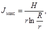
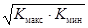
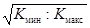

МИНИСТЕРСТВО ЭНЕРГЕТИКИ И ЭЛЕКТРИФИКАЦИИ СССР
ГЛАВНИИПРОЕКТ
УКАЗАНИЯ
ПО ПРОЕКТИРОВАНИЮ ДРЕНАЖА
ПОДЗЕМНЫХ
ГИДРОТЕХНИЧЕСКИХ СООРУЖЕНИЙ
ВСН 045-72
МЭ и Э СССР
МОСКВА 1973
В Указаниях рассматриваются конструктивные формы, элементы и схемы расположения дренажей в зависимости от гидрогеологических условий, приводятся фильтрационные расчеты общих и местных дренажей и противофильтрационной цементации.
Поскольку работа является первой попыткой обобщения и систематизации требований по проектированию этой категории сооружений, в ней приводятся примеры построенных дренажей в подземном строительстве с подробными ссылками на техническую литературу.
Указания могут быть также использованы при проектировании транспортных туннелей, подземных сооружений различного назначения, горных предприятий по добыче полезных ископаемых и др.
Работа выполнена институтом «Гидропроект» имени С.Я. Жука - кандидатом технических наук Н.Я. Вайнштейном и инженером В.Ф. Илюшиным, ГрузНИИЭГС - кандидатом технических наук В.М. Насбергом.
В действующих указаниях и нормах на проектирование гидротехнических туннелей и цементации в них рекомендации по расчетам и конструкциям дренажей, а также по расчетам противофильтрационной цементации отсутствуют. Общие же указания в этих нормативных документах по количественной оценке эффекта, достигаемого применением дренажей и цементации, явно недостаточны.
Указанный пробел в нормативных материалах особо остро ощущается при проектировании крупных подземных сооружений, расположенных на значительной глубине под уровнем грунтовых вод или под ложем водохранилища, когда давление грунтовых вод становится основной нагрузкой на обделки.
Если обделка туннели или шахты имеет металлическую облицовку, то недоучет нагрузки от давления грунтовых вод может принести к выпучиванию и даже разрушению облицовки при опорожнении туннеля.
С помощью разгрузочных дренажей гидростатическое давление грунтовых вод на обделки оказывается возможным уменьшить во много раз благодаря снижению уровня грунтовых вод в районе дренируемого сооружения или гашению напора, происходящему при фильтрации грунтовой воды в дрены. При этом, как показывает опыт проектирования, сооружения с применением разгрузочного дренажа становятся более экономичными по сравнению с теми же сооружениями, рассчитанными на восприятие полного гидростатического давления грунтовых вод.
К устройству дренажа, как к основному мероприятию по ремонту, прибегают также и в тех случаях, когда повреждения в сооружениях от давления грунтовых вод происходят в период эксплуатации.
Давление грунтовых вод на обделки подземных сооружений возможно снизить еще и с помощью противофильтрационной цементации породы.
В ряде случаев оптимальное решение может дать сочетание противофильтрационной цементации и дренажа.
В настоящих Указаниях даются рекомендации по расчетам и конструкциям дренажей и противофильтрационной цементации породы, приведены формулы для фильтрационных расчетов дренажей и противофильтрационной цементации с числовыми примерами и примеры их конструкций. При составлении Указаний использованы результаты исследовательских и методических работ, выполненных в институтах ГрузНИИЭГС, «Гидропроект» имени С.Я. Жука, ВИОГЕМ, ЦНИИС Минтрансстроя и др.
Указания составлены Грузинским научно-исследовательским институтом энергетики и гидротехнических сооружений (канд. техн. наук В.М. Насбергом), Всесоюзным проектно-изыскательским и научно-исследовательским институтом «Гидропроект» имени С.Я. Жука (канд. техн. наук Н.Я. Вайнштейном) и его Среднеазиатским отделением (инж. В.Ф. Илюшиным).
С целью улучшения настоящих Указаний просим все замечания и предложения направлять по адресу: Москва, А-80, ГСП, Волоколамское шоссе, 2, Гидропроект, технический отдел.
|
Ведомственные строительные нормы |
Указания Гидротехнические сооружения |
|
|
Указания по проектированию дренажа подземных гидротехнических сооружений |
1.1. Настоящие Указания распространяются на проектирование дренажа подземных гидротехнических сооружений на всех стадиях их проектирования. Указания применимы также при эксплуатации и реконструкции существующих сооружений.
1.2. Указания могут быть использованы при проектировании дренажа не только основных, но и других подземных сооружений (транспортные и вспомогательные туннели и шахты, кабельные галереи, трансформаторные помещения и др.), а также при проектировании строительного водопонижения, применяемого в период проходки подземных выработок.
1.3. Указаниями рекомендуется пользоваться и при проектировании противофильтрационной цементации породы в районе подземных сооружений, в части назначения размеров и водопроницаемости зоны зацементированной породы, т.е. параметров, обеспечивающих:
а) уменьшение фильтрационных притоков в безнапорные сооружения;
б) снижение давления грунтовых вод на обделки, а также защиту сооружения от агрессивного воздействия грунтовых вод и суффозионных процессов в обделке и породе;
в) уменьшение утечки воды из туннелей и шахт (напорных и безнапорных).
В настоящих Указаниях противофильтрационная цементация рассматривается как «местное» сопротивление в фильтрационном поле в окрестности подземного сооружения. Остальные вопросы, связанные с проектированием цементации породы, как-то: этапы и давление цементации, составы и величина поглощения растворов, изменение деформационных характеристик породы и т.п. рассматриваются в технических условиях ВСН 022-69 Минэнерго СССР, составленных ВНИИГ имени Б.Е. Веденеева [Л. 161].
1.4. Целесообразность применения дренажа, противофильтрационной цементации или их сочетания, или обделок, воспринимающих полное гидростатическое давление грунтовых вод, определяется технико-экономическим сопоставлением вариантов.
1.5. Класс капитальности конструкций дренажа назначается в соответствии с классом капитальности дренируемого сооружения.
1.6. Проектируемые дренажи и противофильтрационная цементация в течение всего срока их службы должны обеспечивать безопасность, бесперебойность и удобство нормальной эксплуатации дренируемого подземного сооружения.
1.7. При проектировании дренажей и противофильтрационной цементации, наряду с данными Указаниями, необходимо соблюдать требования соответствующих государственных стандартов, строительных норм и правил в части конструкции, производства работ, техники безопасности, защиты подземных сооружений от коррозии, требования санитарии и т.п.
1.8. Указания являются обязательными для всех организаций МЭиЭ СССР, проектирующих подземные сооружения, а также для организаций, занимающихся их исследованиями, строительством и эксплуатацией.
1.9. Допущенные при проектировании отступления по отдельным положениями настоящих Указаний должны быть обоснованы специальными исследованиями и утверждены в установленном порядке.
|
Внесены Грузинским научно-исследовательским институтом энергетики и гидротехнических сооружений - ГрузНИИЭГС, институтом «Гидропроект» имени С.Я. Жука и его Среднеазиатским отделением |
Утверждены Главниипроектом МЭиЭ СССР, решение № 136. Согласованы с Госстроем СССР 17 сентября 1971 г., № 1-2446. |
Срок введения 1 января 1972 г. |
2.1. Дренаж в подземных гидротехнических сооружениях применяется с целями:
а) снижения (частично или полностью) давления грунтовых вод на обделки;
б) повышения долговечности сооружения благодаря снижению градиентов напора и расхода воды, фильтрующейся через обделку;
в) предохранения от потери устойчивости (выпучивания) металлической облицовки напорных туннелей и шахт при их опорожнении;
г) защиты машинных залов, шинно-грузовых галерей, лифтовых шахт и других сооружений, в которые недопустимо попадание грунтовых вод;
д) облегчения выполнения подземных строительных работ в водообильных породах;
е) сокращения продолжительности опорожнения напорных туннелей и шахт с обделками без гидроизоляции; сокращение достигается за счет затухания порового давления в бетоне обделки в двух направлениях: внутрь туннеля и в сторону породы [Л. 82].
Дренажи рекомендуется применять также тогда, когда в естественных условиях грунтовые воды отсутствуют, но есть опасность размокания пород с потерей их прочности, выщелачивания или потери устойчивости оползневого склона в связи с фильтрацией воды из туннеля в период эксплуатации.
Примечание. 1. Под термином «грунтовые воды» подразумеваются, кроме естественных грунтовых вод, также и те, которые могут профильтровываться в породу из водохранилищ и водопроводящих сооружений. Возможное повышение уровня грунтовых вод путем фильтрации из этих сооружений определяется с учетом гидрогеологических, гидрологических, топографических, климатических и конструктивных факторов.
2. Для защиты сооружений, указанных в п. г, целесообразно применение заобделочного дренажа с гидроизоляцией обделки.
2.2. В соответствующих гидрогеологических условиях грунтовые воды, каптируемые дренажными устройствами, могут быть использованы для подпитки деривационных туннелей гидроэлектростанций [Л. 27, 153], водоснабжения населенных пунктов и технических нужд промышленных предприятий.
2.3. При помощи местного дренажа (раздел 5), устраиваемого в напорных туннелях и шахтах, облицованных металлом, по увеличению фильтрационного расхода или напора в системе дренажа можно контролирован, состояние облицовок (рис. 1). Дренажи в этом случае должны быть расположены и обделке, на контакте обделки с породой или в виде шпуров, пересекающих контакт обделки с породой или металлической облицовкой. Дрены объединяются в коллекторы, оснащенные соответствующей контрольно-измерительной аппаратурой (раздел 10).
2.4. Дренажи можно применять, если соблюдаются следующие условия:
а) обеспечивается фильтрационная прочность на контакте дренажа с породой;
б) порода устойчива в отношении механической и химической суффозии;
в) порода неустойчива в отношении механической или химической суффозии, но за период эксплуатации сооружения суффозия не может ослабить породу до степени, опасной для работы сооружения;
г) порода неустойчива в отношении механической суффозии при отсутствии в дренажах обратного фильтра, но при устройстве фильтра размеры суффозии в породе не представляют опасности для сохранности естественных свойств породы и работы дренажа;
д) отсутствует опасность механического, химического и биологического кольматажа дренирующих устройств;
е) устройство дренажей не приводит к ощутимым потерям воды из водохранилища;
ж) величина дренируемого расхода в водообильных породах является практически приемлемой.
Примечание. Устойчивость породы в отношении механической и химической суффозий определяется при установившихся максимально возможных и длительно действующих градиентах напора в ближайшей окрестности дрен.
2.5. Явления химической суффозии могут возникнуть в трещиноватых и в пористых суффозионно неустойчивых породах при фильтрации в них воды, обладающей способностью растворять породы.
В зависимости от вида растворяемых составляющих различаются трудно-, средне- и легкорастворимые породы. Примером средне- и легкорастворимых пород являются соответственно породы, содержащие гипс и каменную соль [Л. 165].
Примечание. При изменении температуры и давления в потоке явления химической суффозии могут сопровождаться процессами химического кольматажа, т.е. выпадением солей в осадок и отложением их в дренажных устройствах. Указанное явление может явиться причиной увеличения давления грунтовых вод на обделки.
2.6. Если требования п. 2.4 не соблюдаются, необходимо рассмотреть варианты устройств противофильтрационной цементации (п. 2.8) или конструкций обделок, способных воспринять полное гидростатическое давление грунтовых вод.
2.7. Противофильтрационная цементация породы применяется для:
а) уменьшения давления грунтовых вод на обделки подземных сооружений;
б) уменьшения потерь воды из водохранилища при фильтрации в подземные сооружения, если дренируемая вода не может быть использована для выработки электроэнергии путем подпитки водоподводящих сооружений гидроэлектростанции;
в) уменьшения притока грунтовых вод к подземным сооружениям;
г) снижения фильтрационных утечек из напорных туннелей и шахт;
д) уменьшения размеров дренажных устройств в случае расположения дренируемого сооружения в водообильных породах;
е) устранения сосредоточенных фильтрационных токов и удлинения путей фильтрации;
ж) защиты обделок от воздействия агрессивных грунтовых вод;
з) снижения фильтрационной анизотропии породы;
и) предохранения пород от химической и механической суффозии, которые могут наблюдаться при наличии в породах воднорастворимых минералов (гипс, ангидрит, каменная голь и др.) или при наличии пород, поддающихся растворению, как, например, известняки, аргиллиты, глинистые сланцы и др. [Л. 51].
Противофильтрационная цементация, при наличии соответствующих гидрогеологических условий, позволяет осуществить экономичные конструкции в сочетании с дренажем там, где без такой цементации дренирование грунтовых вод неприемлемо ввиду больших притоков к дренажу.
Примечание. При проектировании противофильтрационной цементации следует учитывать, что она одновременно повышает модули деформации и снижает анизотропию породы.
2.8. Применение противофильтрационной цементации считается возможным, если:
а) удельное водопоглощение скальных пород превышает 0,01 л/мин×м2 [Л. 161, 168, 122]. Возможность и целесообразность применения цементации при меньшей водопроницаемости породы должны быть доказаны опытным путем и технико-экономическими расчетами;
б) действительная скорость движения грунтовых вод не более 600 м/сутки [Л. 162, 168]; при больших скоростях возможность цементации должна быть установлена на основании опытных работ [Л. 168];
в) химический состав грунтовых вод не препятствует процессам реакции схватывания и твердения цементного раствора, т.е. грунтовые воды не являются агрессивными в отношении вида цемента, применяемого для цементации [Л. 162].
2.9. При устройстве противофильтрационной цементации в растворимых породах необходимо проводить специальные исследования для выяснения достаточности срока службы зоны цементации.
3.1. Объем и состав исходных материалов, необходимых для проектирования дренажей и противофильтрационной цементации, определяются в зависимости от:
а) класса сооружения;
б) назначения дренажа и цементации;
в) инженерно-геологических, гидрогеологических и гидрологических условий;
г) стадии проектирования.
3.2. Для составления проекта дренажей и противофильтрационной цементации на всех стадиях проектирования необходимо иметь:
а) аналоги;
б) отчеты по геологическим, гидрогеологическим и гидрологическим изысканиям; сведения о климате;
в) отчеты по специальным исследовательским работам (в необходимых случаях);
г) основные данные проекта производства работ;
д) нагрузки, на которые рассчитаны обделки сооружений;
е) данные для составления единичных расценок и сметы.
3.3. Содержание и объем исходных геологических и гидрогеологических материалов должны отвечать инструкции по составу и объему изысканий для гидроэнергетического строительства [Л. 74] на соответствующей стадии проектирования.
Особое внимание должно быть обращено на получение следующих данных:
а) о водопроницаемости и трещиноватости отдельных литологических разностей породы и их фильтрационной анизотропии и неоднородности;
б) о фильтрационной устойчивости пород, возможности развития химической и механической суффозии;
в) о наличии и характере зон тектонических нарушений породы и качестве породы в этих зонах;
г) об агрессивности грунтовых вод к материалам конструкций дренажей и цементации;
д) о возможности химического кольматажа дренажных устройств;
е) об источниках питания грунтовых вод.
Примечание. Водопроницаемость пород характеризуется коэффициентом фильтрации (приложение 2), значения которого приближенно могут быть определены по величине удельного водопоглощения при нагнетании воды в скважины.
3.4. Материалами по специальным исследовательским работам являются:
а) отчеты по изучению фильтрации;
б) отчеты по опытным цементационным работам.
Содержание и объем специальных исследований устанавливаются в каждом конкретном случае.
3.5. В районе карста должна изучаться суффозионная устойчивость пород на специально устраиваемых для этих целей опытных участках [Л. 94]. Кроме того, целесообразно использовать скважины и другие выработки, послужившие для исследования водопроницаемости пород.
3.6. Данные по гидрологии должны содержать сведения:
а) о скоростях движения грунтовых вод;
б) о химическом составе речной воды, ее агрессивности и температуре;
в) о режиме колебаний уровней и скоростей воды в реке (озере) в районе строительства;
г) о количестве и составе наносов, транспортируемых рекой.
3.7. Сведения по производству работ в подземных сооружениях должны давать представление о строительно-монтажных работах, имеющих отношение к дренажу и противофильтрационной цементации.
3.8. Проект дренажей и противофильтрационной цементации является составной частью проекта подземного сооружения, разрабатывается одновременно с ним, рассматривается и утверждается в его составе.
3.9. Стадии проектирования дренажей и противофильтрационной цементации, а также состав и содержание проекта должны соответствовать таковым для проектируемого подземного сооружения.
3.10. При проектировании противофильтрационной цементации с использованием настоящих Указаний, ВСН 0.22-69 [Л. 16] и лабораторных исследований могут быть выбраны (п. 1.3.) и рассчитаны:
а) геометрическая форма, размеры и расположение зоны цементации породы;
б) водопроницаемость зоны цементации (по удельному водопоглощению или коэффициенту фильтрации);
в) градиент напора в зоне цементации.
Примечание. Геометрические формы противофильтрационной цементации могут быть в виде плоских вертикальных или наклонных завес и экранов, криволинейных экранов, экранов, расположенных вокруг сооружения, и т.д.
3.11. Выбор остальных элементов цементации (диаметр, шаг, длина и рядность скважин, составы и марка раствора и др.), а также проектирование организации и производства работ производится по [Л. 7 - 11, 161, 168].
3.12. Проекты дренажей и цементации, кроме конструктивной части, должны содержать:
а) требования к производству работ по их осуществлению (раздел 9) и способы контроля качества работ; в особых случаях составляются специальные технические условия на производство работ;
б) указания по эксплуатации и способам контроля работы, ремонта и восстановления дренажей и цементации в период эксплуатации (раздел 10);
в) перечень и размещение контрольно-измерительной аппаратуры для проведения натурных наблюдений за дренажем и цементацией.
4.1. При проектировании дренажа и противофильтрационной цементации их геометрический, гидродинамические и гидравлические элементы следует назначать на основании фильтрационных расчетов (раздел 8).
4.2. Параметры дренажей и цементации назначаются такими, чтобы градиенты напора в породе (заполнителе трещин) и зоне цементации не превышали допустимых.
Примечание Величина допустимых градиентов напора в породе (заполнителе трещин) определяется лабораторными или полевыми исследованиями.
4.3. Допустимые средние градиенты напора Jдоп в зоне противофильтрационной цементации в зависимости от перепада напора H в этой зоне, ее водопроницаемости, характеризуемой удельным водопоглощением q (и соответствующим ему коэффициентом фильтрации k), принимаются не более величин градиентов, приводимых в табл. 1.
Примечание.
1. Данные табл. 1 относятся к цементным растворам в скальной породе.
2. Под термином «зона противофильтрационной цементации» понимается объем зацементированной породы в пределах проектного очертания зоны цементации.
3. Под средним градиентом напора понимается отношение потери напора в зоне противофильтрационной цементации к толщине этой зоны.
4. В цементации, замкнутой вокруг сооружения (туннель, шахта и др.), величину максимального градиента напора Jмакс на внутреннем контуре зоны цементации разрешается принимать в два раза больше среднего градиента. Величину максимального градиента определяют по формуле

где r, R - радиусы соответственно внутреннего и внешнего контуров цементации.
Таблица 1 *
|
H, м |
При обеспечении плотности (водопроницаемости) зоны цементации с удельным водопоглощением q, л/мин×м2, не более |
При коэффициенте фильтрации k, м/сутки, не более |
Допустимый средний градиент Jдоп, не должен превышать |
|
Менее 30 |
0,05 |
0,05 |
10 |
|
От 30 до 100 |
0,03 |
0,03 |
15 |
|
Более 100 |
0,01 |
0,01 |
20 |
|
* В табл. 1 значения q и Jдоп взяты из [Л. 122, 162], а соответствующие величины k определены путем умножения q на пересчетный коэффициент, приближенно принятый равным единице [Л. 115]. |
|||
4.4. Если к цементации предъявляется требование защиты обделок от агрессивного воздействия грунтовых вод или защиты от фильтрации в растворимых породах, то величина удельного водопоглощения не должна быть более 0,01 л/мин×м2.
4.5. Допустимую величину фильтрационных потерь воды из напорного туннеля или шахты рекомендуется определять путем энергоэкономического расчета, учитывающего стоимость противофильтрационных мероприятий, с одной стороны, и теряемой выработки электроэнергии вследствие утечки воды - с другой.
При проектировании противофильтрационной цементации в напорных туннелях и шахтах следует также иметь в виду, чтобы утечки воды из них, отнесенные к 1000 м2 их внутренней поверхности, определенные при рабочем давлении воды и отнесенные к 1 кгс/см2 ее давления, не превышали 0,1 - 0,5 л/сек при действующем напоре H ≥ 100 м и 0,5 - 1,0 л/сек при H ≤ 100 м [Л. 161].
4.6. Если дренируемые сооружения располагаются в карстующихся породах, следует иметь в виду, что выщелачивание пород ослабляет их структурные связи, увеличивает общую скважность, расширяет трещины.
4.7. При проектировании дренажей в трещиноватых породах, содержащих растворимые соли, рекомендуется основывать прогноз устойчивости пород главным образом на детальном изучении геологических и гидрогеологических условий.
4.8. Если грунтовые воды в районе подземного сооружения могут подпитываться атмосферными осадками или поверхностными водами и если подпитка может заметно увеличить напор грунтовых вод, то при проектировании дренажных и противофильтрационных мероприятий необходимо учитывать это увеличение.
Если удорожание дренажа, вызванное этим увеличением напора грунтовых вод, будет значительным, следует рассмотреть мероприятия по предупреждению просачивания в горный массив атмосферных осадков или поверхностных вод. Этими мероприятиями могут быть:
а) планировка местности с покрытием ее водонепроницаемым покровом;
б) устройство сети канав с непроницаемой одеждой для отвода вод атмосферных осадков;
в) отвод поверхностных вод или придание их руслу водонепроницаемости.
Вариант защитного мероприятия выбирается на основании технико-экономического сопоставления.
4.9. Вспомогательные туннели и шахты, пройденные для строительства основных подземных сооружений, могут являться (при условии сообщения упомянутых туннелей и шахт с верхним бьефом после окончания строительства):
а) путями подпитки грунтовых вод;
б) причиной значительного увеличения напоров грунтовых вод и скоростей фильтрации в местах примыкания вспомогательных туннелей и шахт к дренируемым сооружениям, что следует учитывать при проектировании дренажных и противофильтрационных мероприятий.
4.10. Для осмотра и ремонта дренажей (например, замены фильтров) необходимо, где это возможно, предусматривать устройство смотровых колодцев, лазов, люков и т.п. или делать дренажи проходимыми.
4.11. Вся система дренажа, по возможности, должна быть разбита на изолированные друг от друга участки (с учетом положения и уклона пьезометрической поверхности грунтовых вод), имеющие отдельные выходы, при помощи которых возможно осуществление промывки и регулирования напора самостоятельно на каждом участке.
4.12. При выборе типа дренажа должны быть обеспечены наиболее экономичные решения. Конструкция дренажей должна обеспечивать возможность применения новых строительных материалов и передовых методов строительства.
4.13. Скважины дренажа следует располагать в таком направлении, чтобы пересечь возможно большее количество наиболее проницаемых трещин.
4.14. Конструкция дренажей должна обеспечивать их сохранность от засорения и затекания цементного раствора при производстве бетонных и цементационных работ в случае сооружения дренажа до окончания этих работ.
4.15. Дренажи следует проектировать так, чтобы исключить возможность замерзания воды в них и в водоотводных устройствах [Л. 74,а].
4.16. Если дренажи имеют связь с потоком воды в туннеле, необходимо принимать во внимание возможность передачи пульсации давления в потоке на обделку со стороны породы (рис. 2, 3 и 4).
4.17. В сейсмических районах дренажные устройства необходимо проектировать с учетом требований СНиП II.А.12.62 (например, дренажные туннели, водоотводящие устройства и др.).
5.1. По воздействию на фильтрационный поток, местоположению, конструкции, режиму работы и ряду других признаков дренажи классифицируются следующим образом.
1. По способности снижать депрессионную поверхность фильтрационного потока:
а) общие - снижающие давление грунтовых вод на обделки благодаря понижению депрессионной поверхности потока в зоне расположения защищаемого сооружения (рис. 5 - 17);
б) местные - снижающие давление грунтовых вод на обделки за счет потери напора при фильтрации в дренажи, расположенные в непосредственной близости от поверхности, разгружаемой от давления грунтовых вод (рис. 1 - 3 и 19 - 22).
Примечание. Общие дренажи применяются при любом заложении, местные, как правило, - при глубоком положении дренируемых сооружений под уровень грунтовых вод.
2. По расположению относительно направления потока грунтовых вод и относительно защищаемых сооружений:
а) верховые, располагаемые на расстоянии от сооружения с верховой, по отношению к потоку, стороны дренируемого массива (рис. 8). Особенно эффективны при расположении на водоупоре. Применяются в достаточно проминаемых породах для узких, вытянутых в длину сооружений, в которых получение сравнительно узкой депрессионной воронки отвечает поставленным задачам. Могут быть однолинейные без поперечных дрен, однолинейные с поперечными дренами, двухлинейные. Применяются в качестве общих дренажей;
б) контурные (кольцевые), устраиваемые вокруг защищаемого сооружения, при поступлении к нему грунтовых вод со всех сторон (например, вокруг здания подземной гидроэлектростанции). Могут быть одноконтурные (рис. 14 - 16), многоконтурные, одноярусные (рис. 14) и многоярусные, располагаемые на различной высоте (рис. 5, 23 и 24). Располагаются вблизи от сооружения. Являются, весьма эффективным общим дренажем;
в) контактные (приобделочные), располагаемые на контакте обделки сооружения с породой (рис. 21, 25, 26, 29 - 31), или пересекающие этот контакт (рис. 28, 32, 33). Применяются, в основном, в качестве местных дренажей, но в определенных условиях могут работать как общий дренаж.
3. По заложению относительно водоупора и степени пересечения фильтрационного потока дренами в вертикальном направлении:
а) совершенного типа, когда дрены доходят до водоупора при пересечении фильтрационного потока по всей высоте (от депрессионной поверхности до водоупора, рис. 8, 34);
б) несовершенного типа, когда дрены не доходят до водоупора или доходят до водоупора, пересекая фильтрационный поток не по всей высоте (рис. 14, 35).
4. По конструкции:
а) туннельные (рис. 7, 14, 18, 34 - 41);
б) скважинные (рис. 10, 12, 16, 17, 23, 42, 43);
в) шахтные (колодезные) (рис. 16);
г) шпуровые (рис. 1, 3, 19, 22, 27, 33, 44 - 47);
д) трубчатые (рис. 20, 48 - 51, 76);
ж) сплошные (тюфяки или необлицованные поверхности породы), (рис. 55);
з) разгрузочные отверстия в обделке (рис. 56 - 58);
и) комбинированные, состоящие из элементов по пп. а - з (рис. 2. 5, 6, 8, 9, 15, 20, 32, 59 - 62).
5. По размерам и возможности осмотра:
а) проходимые, по которым возможно пройти человеку (рис. 52, 63 - 70) и непроходимые (рис. 25 - 31, 49 - 54);
б) открытые (доступные для осмотра), (рис. 44, а, в, 56, 61 и 71) и закрытые (недоступные для осмотра). Закрытые дренажи применяются в простых гидрогеологических условиях и несложной конструкции.
6. В зависимости от состояния породы:
а) закрепляемые (рис. 38 - 40) и не закрепляемые (рис. 13, 14);
б) с фильтрами (рис. 2, 20, 21, 29 - 31, 34, 36 - 39, 41,б, 61, 71 - 74) и без фильтров (22, 48, 49, 55 - 58, 75).
7. По режиму работы:
а) напорные (рис. 21) и безнапорные (рис. 9 - 16, 18, 25, 29 - 32, 42, 43, 48, 55, 59, 61 - 65);
б) регулируемые (рис. 1, 23, 28, 71, 74) и нерегулируемые (рис. 21, 29 - 32, 72)
8. По способу производства работ, выполняемые:
а) открытым способом (рис. 16, 26, 34);
б) подземным способом (рис. 6, 10, 11, 15, 23, 28, 32, 42, 59, 61, 62);
в) комбинированным способом (рис. 9, 60, 71).
5.2. Выбор типа дренажа зависит от:
а) геологических и гидрогеологических условий (напор грунтовых вод, граничные условия области фильтрации, расстояние до контура питания грунтовых вод и до водоразделов, направление движения фильтрационного потока, напластование, водообильность пород, физико-химические свойства пород и грунтовых вод и т.д.);
б) физико-химических процессов в породе, вызываемых движением грунтовых и поверхностных вод и влиянием метеорологических факторов;
в) конструкции и материала обделок дренируемого сооружения, а также условий его работы;
г) условий строительства и эксплуатации дренируемого сооружения и дренажа.
5.3. При проектировании дренажных туннелей рекомендуется учитывать следующее:
а) в зависимости от местных условий и форм дренируемых сооружений дренажные туннели в плане могут быть прямолинейными и криволинейными (полигональными), незамкнутыми и замкнутыми, непрерывными и поучастковыми;
б) дренажные туннели рекомендуется закладывать с верховой стороны грунтового потока, чтобы полнее перехватить воду водоносного горизонта (рис. 8, 13);
в) крепление выработки назначается в зависимости от прочности пород, учитывая необходимость иметь большую водопроницаемость обделки. В крепких и устойчивых породах дренажные туннели рекомендуется оставлять незакрепленными;
г) одноярусные дренажные туннели применяются в однородных породах; многоярусные - в случае переслаивания водопроницаемых и водонепроницаемых пород (при наличии нескольких водоносных горизонтов);
д) дренажные туннели устраиваются с уклоном, исключающим возможность заиления и размыва водоотводных канав и обеспечивающим удобство производства работ по устройству туннеля и его эксплуатации;
е) в целях обеспечения нормального стока дренажных вод лотковая часть туннеля бетонируется или устраивается специальная водоотводная канава (рис. 32, 36 - 39);
ж) в дренажных туннелях длиной более 200 м предусматриваются ниши-убежища выше подошвы на 0,5 м через каждые 100 м в шахматном порядке;
з) в местностях с суровым климатом дренажный туннель утепляется на необходимой длине;
и) размеры дренажных туннелей определяются расходом пропускаемой ими воды, условиями строительства и эксплуатации. Минимальные размеры поперечного сечения дренажных туннелей принимаются в соответствии с [Л. 166].
5.4. Скважинный дренаж проектируется с учетом следующих положений:
а) длину скважин можно принимать до 100 м, диаметр скважин - в пределах 50 - 150 мм;
б) скважины располагаются рядами (вертикально, горизонтально и наклонно) и лучами;
в) вертикальные восходящие и нисходящие скважины рекомендуется применять при наличии нескольких водоносных горизонтов, а также при дренировании подземных сооружений большой высоты (например, здания гидроэлектростанций, шахты больших диаметров и т.д.), (рис. 9, 15, 24, 43, 71);
г) вертикальные нисходящие скважины можно применять, когда ниже сооружения располагаются пласты со значительно большей водопроницаемостью, чем в районе сооружения, но с незначительными напорами грунтовых вод. В этом случае система вертикальных дрен, прорезающих дренируемый массив и нижележащий проницаемый пласт, снижает свободную поверхность грунтовых вод (или их пьезометрическую поверхность);
д) горизонтальные скважины применяются в слоистой породе с крутопадающими пластами. Максимальный эффект достигается, если дрены направлены нормально к напластованию;
е) лучевые (горизонтальные, вертикальные и наклонные) скважины применяются, когда из одной «точки» (камеры, ниши) необходимо сдренировать большой объем породы (рис. 17, 23, 28, 42, 59, 61). Скважины бурятся в виде пучка или веерообразно из специальных ниш, камер и шахт или непосредственно из выработок дренируемых сооружений;
ж) устья скважин должны быть доступны для осмотра, монтажно-демонтажных работ и измерений дебита и напора;
з) устья скважин, направленных наклонно или вертикально вниз, должны быть надежно предохранены от попадания в них поверхностных вод и посторонних предметов;
и) в устойчивых ненарушенных породах скважины не закрепляются;
к) нерабочие участки скважин, проходящих в слабых породах, необходимо закрепить обсадными трубами. Трубы могут быть стальные, из нержавеющей стали, чугунные, асбоцементные и пластмассовые (раздел 6).
5.5. Шпуровой дренаж может быть применен для разгрузки от давления грунтовых вод обделок любых подземных сооружений. Он состоит из системы шпуров диаметром 50 - 100 мм и длиной в несколько метров, пробуренных при равномерной трещиноватости породы нормально к поверхности обделки. При неравномерной трещиноватости (слоистость) и фильтрационной анизотропии породы шпуры следует ориентировать с учетом этих особенностей.
Шпуровой дренаж обладает следующими положительными свойствами:
а) высокой дренирующей способностью при малых его размерах;
б) возможностью совмещения с заполнительной и противофильтрационной цементацией;
в) возможностью устройства после возведения обделки;
г) возможностью осуществления любой степени дренирования локальных участков обделки путем изменения длины и шага шпуров;
д) простотой осуществления с помощью перфораторного бурения.
5.6. Трубчатый дренаж (продольный, поперечный, комбинированный) устраивается на контакте бетонных (железобетонных) обделок с породой или металлической облицовкой (рис. 26, 50, 53) и внутри бетонных (железобетонных) обделок (рис. 20, 48, 49, 51).
Эти дренажи могут быть выполнены в виде:
а) цилиндрических полостей, созданных извлекаемыми полостеобразователями;
б) перфорированных труб, обмотанных стеклотканями, или труб из пористого материала, оставляемых в обделках;
в) скважин, пробуренных в бетоне.
При применении дренажей по пп. а и в извлечение пустотообразователей или бурение скважин производится после окончания работ по заполнительной и противофильтрационной цементации.
Дренажи по п. б позволяют проводить повторно цементационные работы, если в этом возникает необходимость в процессе, эксплуатации. Это возможно благодаря способности стеклоткани задерживать частицы цемента и пропускать воду (рис. 20), [Л. 28, 85, 145].
5.7. Ленточный (продольный и поперечный) дренаж применяется, как правило, в безнапорных сооружениях. Он представляет собой полости, устроенные на контакте породы с обделкой (рис. 21). Эти полости могут быть заполнены фильтрующим материалом.
В качестве фильтрующего материала применяются: песок, гравий, щебень, стекловата, шлаковата, пористый бетон (сборный или монолитный), [Л. 49, 70, 71, 142, 169]. Вяжущее для пористого бетона (цемент, битум, полимерные смолы) назначается в зависимости от химического состава грунтовой воды.
Ленточные дренажи размещаются в породе в специальных нишах (штрабах, канавах, траншеях) или в пределах сечения обделок. Они также могут быть образованы путем оставления на поверхности выработки незабетонированных полос породы (в негидротехнических туннелях).
Для устройства прискальных ленточных дрен можно использовать резиновые ленты или гибкие пластмассовые перфорированные трубы, прикрытые шлаковатным ковром и прижатые к скале сеткой, закрепленной специальными анкерами (рис. 53). В местах крутых поворотов и изгибов дрен следует применить гофрированные пластмассовые трубки (рис. 54). Для защиты шлаковатного ковра от механического воздействия бетонной смеси (набрызг-бетона) его следует покрывать хлорвиниловой пленкой.
5.8. Сплошной дренаж применяется в устойчивых породах, характеризующихся умеренной водопроницаемостью. Он устраивается в виде:
а) прослоек из фильтрующего материала (песок, гравий, щебень, пористый бетон, шлаковата, стекловата и т.п.), расположенных по контакту обделки с породой (рис. 30, 31);
б) полостей между породой и ненесущей (декоративной) облицовкой (рис. 55);
в) открытой необлицованной поверхности породы.
5.9. В качестве фильтрующих применяются материалы, перечисленные в п. 5.7.
5.10. Дренаж в виде разгрузочных отверстий (короткие шпуры) в обделке (рис. 77) служит для разгрузки ее от давления грунтовых вод, а также для организованного их отвода в местах мокрых пятен и течей, обнаруживаемых во время эксплуатации сооружений.
Дренаж выполняется в виде отверстий разбуриваемых в обделке с заглублением в породу на 50 - 60 см. При наличии металлической облицовки разгрузочные отверстия рассверливаются с некоторым заглублением в бетон обделки, после чего завариваются в пределах толщины облицовки (рис. 22 и 60).
Разгрузочные отверстия можно применять:
а) при маловодопроницаемых скальных породах;
б) в пределах бетонной обделки для разгрузки металлических облицовок в напорных туннелях и шахтах при их опорожнении.
5.11. В тех случаях, когда при нормальной работе напорного сооружения не требуется разгрузка обделки от давления грунтовых вод, а разгрузка дренажем необходима при опорожнении туннеля, может быть применен регулируемый (например, выключаемый) дренаж. Регулирование возможно осуществить при помощи:
а) задвижек, устраиваемых на коллекторных трубах, в местах, доступных для осмотра или контроля в любой период эксплуатации;
б) автоматических обратных клапанов, открывающихся под давлением грунтовой воды.
Для увеличения надежности своевременного открытия и закрытия задвижек целесообразно управление ими автоматизировать, сблокировав электромеханическим управлением с работой затворов на водоводах.
При проектировании дренажа этого типа необходимо предусматривать мероприятия, исключающие возможность его засорения.
5.12. По степени воздействия на форму грунтового притока, местоположению относительно защищаемого сооружения и другим признакам противофильтрационная цементация подразделяется на следующие виды.
1. По степени воздействия на фильтрационный приток:
а) изменяющая положение депрессионной поверхности (рис. 35, 78, 79);
б) удлиняющая пути фильтрации с целью уменьшения градиентов напора (рис. 4, 26, 46);
в) уменьшающая приток грунтовых вод к сооружению или утечки воды из напорных сооружений (рис. 25, 59, 75).
2. По местоположению относительно защищаемого сооружения:
а) у контура выработки (рис. 4, 27, 59, 75, 79);
б) на расстоянии от контура выработки (рис. 25, 78).
3. По степени ограждения защищаемого сооружения:
а) замкнутая - расположенная вокруг всех поверхностей сооружения в пределах области фильтрации (рис. 5, 75);
б) незамкнутая - расположенная с одной или нескольких сторон сооружения (рис. 35, 78).
4. По расположению цементации в виде цементационной завесы относительно водоупора:
а) совершенная - доведенная до водоупора;
б) несовершенная («висячая») - недоведенная до водоупора.
5. Вид противофильтрационной цементации выбирается в зависимости от:
а) компоновки и конструкции сооружения;
б) элементов фильтрационного потока (величины напоров грунтовых вод, градиентов напора, формы границ и размеров области фильтрации, условий на ее границах и т.п.);
в) физико-механических и фильтрационных свойств породы;
г) химического состава грунтовых вод.
5.13. Противофильтрационная цементация, снижающая депрессионную поверхность грунтового потока в районе защищаемого сооружения, устраивается в виде завес совершенного или несовершенного типа. Завесы следует располагать поперек пути фильтрационного потока или вокруг защищаемого сооружения. С помощью совершенной противофильтрационной завесы, расположенной вокруг защищаемого сооружения, можно практически полностью преградить пути движения грунтовых вод к сооружению.
5.14. При проектировании противофильтрационных завес необходимо учитывать, что наибольшее снижение депрессионной поверхности получается при совместном действии завесы и дренажа. Дренаж при этом должен располагаться у защищаемого сооружения или между сооружением и завесой (рис. 78).
Примечание. Если породы подвержены механической и химической суффозиям, из-за которых недопустимы значительные градиенты напора в породе, то от устройства дренажа следует отказаться.
Глубина (длина) дренажных скважин принимается в зависимости от степени трещиноватости и водопроницаемости породы, характера залегания породы, расположения водоупора и т.п., а также от размеров противофильтрационной завесы.
Расстояние дренажных скважин от цементационной завесы устанавливается в каждом конкретном случае. Это расстояние допустимо принимать равным не менее 2 - 3 шагов скважин противофильтрационной завесы и не менее 4 м [Л. 168].
5.15. Противофильтрационная цементация, применяемая с целью удлинения пути фильтрации к защищаемому сооружению, устраивается в виде экранов. Экраны, например, в виде дискообразных или конусообразных воротников вокруг туннелей и шахт располагаются так, чтобы максимально пересечь сосредоточенные пути фильтрации (рис. 4, 27, 46). При слоистой породе экраны целесообразно располагать так, чтобы угол между плоскостью экрана и слоями породы составлял 90° или был близок к этой величине.
При противофильтрационной цементации в виде экрана, устраиваемого на пути потока, дренажи располагаются возможно ближе к защищаемому сооружению.
5.16. Цементация, предназначенная для уменьшения притока грунтовых вод к сооружению, незначительно влияющая на гидродинамические элемент естественного фильтрационного потока, устраивается по контуру выработок или на небольшом расстоянии от него. Глубина зоны цементации зависит от местных условий и определяется из фильтрационного расчета; ориентировочно на предварительных стадиях проектирования ее можно назначать в пределах 3 - 7 м.
5.17. Вид противофильтрационной цементации, названный в п. 5.16, может применяться как самостоятельно, так и с дренажем, расположенным на контакте обделки с породой, или внутри зоны цементации (например, шпуровой дренаж) в пределах половины ее глубины, считая от внутренней поверхности зоны (рис. 4, 75).
5.18. Зону противофильтрационной цементации следует располагать на расстоянии от контура выработки, когда:
а) требуется максимально разгрузить обделку от давления грунтовых вод совместным действием цементации и дренажа;
б) подземная выработка не закреплена обделкой и стены выработки не способны выдержать давление цементационного раствора;
в) для восприятия давления цементационного раствора потребовалось бы изменение формы сечения или толщины обделки;
г) зона цементации, примыкающая к контуру выработки, не способна выдержать давление грунтовых вод.
Расстояние от контура выработки до зоны цементации определяется условиями статической и фильтрационной работы породы (зацементированной и незацементированной) и обделки.
Этот вид цементации может применяться как самостоятельно, так и с дренажем, который следует располагать на контакте обделки с породой или в породе между обделкой (поверхностью выработки) и зоной цементации, но не внутри зоны цементации [Л. 110, 119, 107].
5.19. Остальные указания по проектированию противофильтрационной цементации и производству работ по ее осуществлению следует принимать по [Л. 161, 168].
6.1. Фильтры в дренажах устраиваются, когда:
а) необходимо обеспечить фильтрационную прочность на контакте дренажа с породой;
б) возможна механическая суффозия в неустойчивых породах (например, слабые известняки, мел, галечники, пески);
в) имеется опасность осыпания породы в дренажные полости;
г) необходимо защитить дренажные полости от попадания в них цемента при бетонировании обделок и цементации породы; с этой целью можно применить, например, стекловолокно, стеклоткани, шлаковату и другие материалы.
6.2. Для изготовления и устройства фильтров применяются материалы: песок, гравий, щебень, пористый бетон, сталь, нержавеющая сталь, латунь, синтетические материалы, асбоцемент, керамика, фарфор и др.
6.3. При выборе типа и конструкции фильтра следует исходить из основных требований к ним:
а) фильтр должен обладать необходимой механической прочностью и иметь достаточную устойчивость против химической и электрохимической коррозии и эрозионного воздействия воды;
б) фильтр должен пропускать максимальное количество воды при своих минимальных размерах;
в) вода в фильтр должна поступать, по возможности, с большей поверхности породы и с наименьшими скоростями;
г) фильтр должен иметь, по возможности, большую скважность;
д) при постоянной работе фильтра не должно происходить выноса частиц породы («пескования»);
е) фильтры необходимо подбирать с учетом возможного изменения во времени скважности и размеров проходных отверстий в зависимости от химического состава грунтовых вод;
ж) фильтры, по возможности, должны быть доступны для механической и химической очистки.
6.4. При выборе типа и конструкции фильтра необходимо учитывать условия его эксплуатации (длительность и величина фильтрационного расхода), имея при этом в виду, что:
а) в дренажах, рассчитанных на длительную эксплуатацию, фильтры выполняются с применением нержавеющей стали, пластмасс, асбоцемента и других стойких материалов. В случае применения обычных сталей необходимо предусматривать их защиту покрытием водоустойчивыми лаками, пластмассами, металлическими пленками (кадмирование, цинкование), твердыми резиновыми оболочками типа эбонита;
б) увеличение числа слоев гравийных обсыпок и их толщины способствует предохранению фильтров от зарастания и повышению сроков их эксплуатации.
6.5. В дренажах туннельных, ленточных и сплошных (п. 5.1, подпункт 4,а, е, ж) в качестве фильтров могут быть применены: песок, гравий, щебень, пористый бетон [Л. 49, 70, 71, 142, 169 и приложение 4, п. 14], стекловолокно (стекловата, стеклоткани, стеклорогожа и т.п.), [Л. 85, 127, 145].
6.6. В шпуровых и трубчатых дренажах, а также разгрузочных отверстиях фильтры могут, устраиваться из перфорированных труб, металлических каркасов с сетками и без сеток, пористого бетона, синтетических материалов и др.
6.7. В неустойчивых скальных и мягких породах вместо шпурового дренажа можно применять забивные фильтры [Л. 44] длиной 3 - 5 м, из которых рабочая часть составляет 50 - 80 %. Скважность забивного фильтра принимается в пределах 6 - 25 %, расстояние между отверстиями - в 3 - 4 раза больше их ширины (диаметра). Фильтр перфорируется круглыми или щелевыми отверстиями. В крупнозернистых гравелистых песках размеры перфорации принимаются увеличенными. Отверстия располагаются в шахматном порядке или по прямоугольникам. Расстояния между забивными фильтрами определяются расчетным путем, так же как и при шпуровом дренаже. В мягкие породы фильтр забивается кувалдой, а в твердых породах бурятся скважины, в которые затем закладывается фильтр (рис. 74), [Л. 44].
6.8. Фильтры скважинного дренажа наиболее многочисленны и разнообразны по своей конструкции. В приложении 4 дано краткое описание конструкции фильтров скважинного дренажа и условий их применимости.
6.9. Подбор фильтров, их расчет и конструирование следует производить по [Л. 49, 71, 141. и 169].
6.10. При проектировании фильтров следует иметь в виду, что их конструкция может быть уточнена во время производства работ на основании данных, полученных при проходке выработок и бурении скважин.
7.1. Профильтровавшаяся в дренажи вода может отводиться:
а) внутрь водопроводящего туннеля (шахты), (рис. 2, 3, 21, 47);
б) самотеком на дневную поверхность (рис. 5);
в) и нижерасположенные водопроницаемые водоносные пласты;
г) откачкой насосами (рис. 16, 43, 63, 64).
7.2. Выпуск дренажной воды внутрь гидротехнических туннелей (шахт) допустим при соблюдении следующих условий:
а) внутренний напор в туннеле не превосходит минимального напора грунтовых вод;
б) отсутствует опасность загрязнения транспортируемой по туннелю воды вредными продуктами выщелачивания горных пород;
в) скорость воды в туннеле и конструкция выпусков исключают возможность возникновения кавитации;
г) не опасна передача пульсационного давления потока в дренажи;
д) не опасно замерзание воды в туннеле.
7.3. Отвод воды на дневную поверхность следует производить на участки местности, с которых невозможна подпитка грунтовых вод в районе дренируемого сооружения. Трасса коллекторов назначается на основании технико-экономического сопоставления вариантов.
При наличии вспомогательных выработок, устраиваемых на период строительства, следует рассматривать возможность их использования для отвода грунтовых вод.
7.4. Продольный профиль дренажных и водоотводных выработок рекомендуется назначать с таким расчетом, чтобы вода по ним стекала самотеком в пониженные места рельефа, реки, ручьи и т.д.
7.5. У порталов водоотводных (дренажных) туннелей следует предусматривать заграждения с воротами (дверями) и, в необходимых случаях, помещения для хранения оборудования, связанного с эксплуатацией этих туннелей и проведением натурных наблюдений.
7.6. Сброс дренажной воды в нижерасположенные пласты породы допускается, если они имеют достаточную поглощающую способность, и дополнительная подпитка пласта не вызовет отрицательных последствий (например, загрязнение подземных вод, создание со временем подпора подземных вод и т.п.).
7.7. Откачка дренажной воды насосами допускается при невозможности обеспечения самотечного отвода или перепуска в нижележащие пласты.
7.8. Расчет водоотводных устройств дренажа (трубы, лотки, каналы и др.) производится по формулам гидравлики. В зависимости от сложности гидрогеологических условий и конструкции дренажа пропускную способность устройств следует назначать с запасом, например, с коэффициентом, равным 1,5 - 2,0.
7.9. При проектировании водоотводящих устройств необходимо предусматривать мероприятия по предупреждению замерзания воды на выводах как в подземных сооружениях, так и за их пределами.
8.1. Фильтрационные расчеты дренажей и противофильтрационной цементации следует производить для того из режимов фильтрации (установившегося или неустановившегося, в частности, регулярно повторяющегося), при котором результаты расчета обеспечат относительно большую надежность работы дренажей и цементации.
8.2. При расчетах дренажей и противофильтрационной цементации в целях упрощения, если это допускают гидрогеологические и геологические условия, можно принимать, что порода является однородной и изотропной в отношении водопроницаемости, а фильтрация подчиняется закону Дарси [Л. 7, 9, 11, 13, 14, 22, 89, 93, 160, 168, 174].
8.3. Если дренажи и противофильтрационная цементация не могут быть рассчитаны с достаточной степенью точности, следует проводить необходимые модельные фильтрационные исследования.
Объем исследований определяется классом и степенью сложности дренируемого сооружения, стадией проектирования, величиной напора грунтовых вод, инженерно-геологическими и гидрогеологическими условиями.
8.4. В определенных гидрогеологических и инженерно-геологических условиях может оказаться возможным учет фильтрационной анизотропии породы. Для оценки в этих условиях разгружающего эффекта дренажных и противофильтрационных устройств следует привести анизотропную водопроницаемую среду к фиктивной изотропной.
Для приведения к изотропной среде с коэффициентом
фильтрации k0 =  
Если сооружение дренировано местными дренажами, расположенными по контуру обделки, эпюра остаточных напоров получается деформированной таким образом, что остаточные напоры в направлении наибольшей водопроницаемости породы увеличиваются, а в направлении наименьшей проницаемости уменьшаются по сравнению со случаем, когда порода изотропна по водопроницаемости. Для восстановления симметрии формы эпюры остаточных напоров можно применять следующие способы:
а) неравномерно распределять дрены по поверхности дренируемого сооружения;
б) при равномерном распределении дрен изменять их размеры в увязке с направлениями осей фильтрационной анизотропии;
в) снижать фильтрационную анизотропию путем цементации породы.
8.5. При фильтрационных расчетах принимается, что у обделок из монолитного бетона и железобетона [Л. 6, 128]:
а) обеспечивается плотное прилегание к поверхности выработки;
б) швы между отдельными участками уложенного бетона обеспечивают прочную связь этих участков в единую конструкцию и не допускают фильтрации воды;
в) отсутствуют разрывы, трещины, раковины и другие нарушения сплошности или деформации.
При соблюдении этих условий коэффициент фильтрации бетона обделок принимается по табл. 2 [Л. 43, 121].
|
Марка бетона |
|||||
|
В2 |
В4 |
В6 |
В8 |
В12 |
|
|
см/сек |
3 ´ 10-8 |
1 ´ 10-8 |
0,5 ´ 10-8 |
0,3 ´ 10-8 |
0,08 ´ 10-8 |
|
м/сутки |
3 ´ 10-5 |
0,8 ´ 10-5 |
0,4 ´ 10-5 |
0,3 ´ 10-55 |
0,07 ´ 10-5 |
|
Примечание. Марки бетона В2 - В12, установленные ГОСТ 4795-68, характеризуются водопроницаемостью лабораторных образцов (диаметром и длиной 150 мм), испытываемых по ГОСТ 4795-59 в 180-дневном возрасте. |
|||||
8.6. Если к обделкам подземных сооружений не предъявляются требования водонепроницаемости и трещиностойкости (вспомогательные, безнапорные строительные туннели и др.) и в них допускается фильтрация воды через строительные швы и дефекты бетонирования, то коэффициент фильтрации бетонных обделок этих сооружений для предварительных расчетов можно принимать равным 10-4 - 10-6 см/сек [Л. 43, 53, 80, 138, 139].
После возведения обделки рекомендуется ее коэффициент фильтрации проверить в натуре, для чего могут быть применены способы, указанные в разделе 10.
8.7. Если окажется, что действительный коэффициент фильтрации обделки на исследуемом участке меньше расчетного, необходимо усилить дренаж или применить противофильтрационную цементацию породы. При этом следует иметь в виду, что со временем может иметь место дальнейшее уменьшение коэффициента фильтрации обделки.
8.8. Учет в фильтрационных расчетах водопроницаемости обделки может дать практически ощутимое уменьшение давления грунтовых вод на обделку, если соотношение коэффициентов фильтрации обделки и породы будет равно или более приблизительно 0,003 [Л. 89, 91 - 93].
9.1. При проектировании конструкции дренажей и противофильтрационной цементации следует учитывать требования и условия производства работ, которые могут повлиять на выбор типа или конструкции дренажа и цементации, а также на их работоспособность. Эти требования могут быть очень разнообразными в зависимости от конкретных условий.
9.2. Работы по осуществлению дренажа и противофильтрационной цементации необходимо выполнять с соблюдением требований СНиП, строительных норм, технических указаний, а также специальных технических условий и инструкций.
9.3. В проектах дренажей и цементации следует указывать:
а) очередность операций по их выполнению;
б) допуски в отклонении от размеров элементов конструкций;
в) специальные мероприятия, гарантирующие требуемое качество работ;
г) способы контроля качества выполненных работ (продувка сжатым воздухом, прокачка водой, испытание герметичности и др.).
9.4. В сооружениях, снабженных системой дренажа, скважины для цементации (если последняя выполняется после устройства дренажа) должны располагаться с таким расчетом, чтобы в процессе цементации была исключена возможность забивки дренажа или должны предусматриваться вспомогательные защитные элементы, предотвращающие его забивку цементом. Кроме того, рекомендуется в процессе цементации промывать дренаж, если это позволяют конструкции дренажа и сооружения. Цементация после устройства дренажа может производиться при особом обосновании.
9.5. Работы по противофильтрационной цементации следует выполнять до постановки сооружения под напор.
9.6. Давление нагнетания при выполнении противофильтрационной цементации должно назначаться с превышением на величину давления грунтовых вод, если последнее будет наблюдаться во время проведения цементационных работ.
9.7. В сложных гидрогеологических условиях при устройстве длинных дренажных скважин следует выполнять контрольно-разведочное бурение.
9.8. Возможные изменения в конструкции дренажей и противофильтрационной цементации, вызываемые несоответствием фактических геологических и гидрогеологических условий с проектными, согласовываются в обязательном порядке с проектной организацией.
10.1. В проектах постоянных подземных сооружений, имеющих в своем составе дренажи, противофильтрационную цементацию или их сочетание, необходимо предусматривать установку контрольно-измерительной аппаратуры для наблюдения за работой дренажей и зацементированной породы.
Контрольно-измерительную аппаратуру для наблюдения за давлением грунтовых вод следует также предусматривать в подземных сооружениях, не имеющих в своем составе дренажей и противофильтрационной цементации, но расположенных (в проектных условиях) в зоне грунтовых вод и испытывающих их давление.
10.2. При разработке проектов размещения контрольно-измерительной аппаратуры следует предусматривать приборы и оборудование, позволяющие:
а) измерить пьезометрические уровни грунтовых вод с одновременной фиксацией величин атмосферных осадков и колебаний уровня воды в водоемах и водотоках, имеющих связь с грунтовыми водами в районе проектируемого сооружения;
б) замерить приток грунтовых вод, приходящийся, на все сооружение и его отдельные участки и элементы, при помощи расходомеров, водосливов, мерных баков и т.д.;
в) определять давление грунтовых вод на обделки с помощью пьезометров, пьезодинамометров, манометров;
г) наблюдать за утечками воды из напорных туннелей;
д) измерить перепад напора в зоне противофильтрационной цементации, для чего датчики давления устанавливать с ее верховой и низовой сторон;
е) управлять давлением грунтовых вод на сооружение при наличии регулируемого дренажа.
Примечание. 1. Для измерения фильтрационного расхода скважинного дренажа устья скважин следует оборудовать металлическими насадками с вентилями.
2. В напорных туннелях особое внимание следует обращать на организацию наблюдений за участками приближения туннелей к склонам и за дренажами, расположенными в непосредственной близости от туннелей.
10.3. С целью получения достоверных значений величин коэффициента передачи давления грунтовых вод на разного типа обделки в проектах подземных сооружений рекомендуется предусматривать опытные участки. На этих участках в процессе строительства необходимо проводить особо тщательно гидрогеологическое документирование водовмещающих пород, а обделку и зону цементации (если цементация предусматривается) - оснащать в необходимом количестве закладной контрольно-измерительной аппаратурой.
10.4. Для определения коэффициента фильтрации обделки постоянных сооружений можно применить следующие способы:
а) занапоривание участка туннеля (шахты) и измерение утечек воды из него при известном перепаде напора в обделке;
б) измерение притока грунтовых вод на исследуемом участке при одновременном измерении действующего на обделку напора;
в) измерение расхода воды, нагнетаемой в обделку из небольших плоских камер, прижатых герметично к обделке [Л. 116];
г) измерение расхода воды, нагнетаемой в скважины, пробуренные в обделке;
д) измерение расхода воды, нагнетаемой и щелевидную полость небольших размеров, устраиваемую в обделке при ее бетонировании. Полость располагается посередине сечения обделки и может быть создана при помощи закладного или извлекаемого полостеобразователя.
Имея значения расходов воды и перепадов напора, по соответствующим зависимостям определяются коэффициенты фильтрации обделок. Зависимость для определения коэффициента фильтрации по п. д может быть получена методом ЭГДА на модели.
10.5. Кроме наблюдений за фильтрационным расходом и давлением воды, должны быть предусмотрены наблюдения за:
а) химическим составом и температурой фильтрующихся вод;
б) количеством и гранулометрическим составом твердых частиц, выносимых фильтрационным потоком из породы, фильтров или зоны цементации;
в) состоянием обнаженных поверхностей породы или дренажных полостей;
г) состоянием натеков извести, выщелачиваемой из бетонной обделки.
10.6. При расположении сооружений в породах, не устойчивых в отношении химической суффозии, проект натурных наблюдений следует составлять с использованием [Л. 165].
10.7. Если подземное сооружение с дренажем располагается в неблагоприятных гидрогеологических условиях или дренаж (с цементацией или без нее) запроектирован достаточно сложным, необходимо разрабатывать инструкцию по его эксплуатации. Эта инструкция должна входить в состав общей инструкции по эксплуатации сооружения и содержать указания, способствующие обеспечению нормальной и продолжительной работы дренажей и противофильтрационной цементации.
10.8. При отсутствии поступления воды из дренажной скважины после установления проектного положения кривой депрессии, скважину следует затампонировать, и, в случае необходимости, пробурить новую.
10.9. Если во время эксплуатации появится опасный вынос частиц грунта, необходимо уменьшить расход дренируемой воды или установить обратный фильтр. Если указанные мероприятия не удастся осуществить или если они не дадут достаточного эффекта, следует рассмотреть возможность устройства противофильтрационной цементации.
10.10. Если кривая депрессии (или давление грунтовых вод на обделку при местном дренаже) окажется значительно ниже предусмотренных проектом, целесообразно соответственно уменьшить расход дренажа.
10.11. Если расход дренажа снижается при одновременном подъеме кривой депрессии или увеличении давления грунтовых вод на обделку, необходимо произвести чистку дренажных устройств или, по возможности, бурение дополнительных скважин.
10.12. Способ очистки дренажных устройств зависит от их конструктивных особенностей. Восстановление работоспособности, например, скважинного дренажа производится следующими способами:
а) очистка от осадка при помощи эрлифта с водоподъемными трубами, опущенными в нижнюю часть отстойника;
б) очистка скважины буровым наконечником (или в комбинации с ершом-щеткой) с одновременной промывкой водой и последующей прокачкой эрлифтом;
в) обработка соляной кислотой для растворения осадка и удаления промывкой продуктов реакции;
г) рыхление породы в призабойной области взрывами малых зарядов.
д) свабирование (поршневание);
е) смена фильтров.
10.13. В случае применения регулируемых дренажей их опорожнение необходимо производить медленно во избежание образования больших градиентов напора на входе в дрены.
Рис. 1. Шпуровой регулируемый дренаж напорного туннеля Нендац (Швейцария), [Л. 198]:
1 - металлическая облицовка; 2 - контрольные трубы; 3 - верховая труба; 4 - низовая труба; 5 - строительная дрена; 6 - камера затворов; 7 - напорный трубопровод; 8 - уравнительная шахта; 9 - породы карбона; 10 - точка пересечения выработок туннеля и промежуточной шахты; 11 - граница металлической облицовки уравнительной шахты; 12 - триасс; 13 - кварциты; 14 - ангидриты; 15 - конец металлической облицовки туннеля; 16 - граница перфорирования низовой контрольной трубы; 17 - врезка уравнительной шахты в туннель; 18 - конец низовой контрольной трубы; 19 - граница перфорирования верховой контрольной трубы; 20 - конец верховой контрольной трубы; 21 - зона контроля низовой трубы; 22 - зона контроля верховой трубы; 23 - слои водонепроницаемого милонита.
Узел А - деталь расположения и перфорации металлической контрольной трубы: 1 - туннель; 2 - кольцо жесткости металлической облицовки; 3 - металлическая облицовка; 4 - контрольная металлическая труба; 5 - перфорация сквозь облицовку, трубу и бетон; 6 - внешнее кольцо бетона.
Рис. 2. Комбинированный местный дренаж безнапорного туннеля, [Л. 109, 89]:
1 - обделка туннеля; 2 - шпуровые дрены; 3 - водоотводная трубка; 4 - ленточная дрена из гравия; 5 - коллекторная труба.
Рис. 3. Шпуровой дренаж, [Л. 109, 89]:
1 - обделка безнапорного туннеля; 2 - шпуровые дрены; 3 - коллекторная труба; 4 - отвод сдренированной воды из коллектора 3.
Рис. 4. Дренажи и цементация у затворного узла строительного туннеля III яруса Нурекской ГЭС (вариант), [Л. 63]:
1 - шпуровые дрены Æ 50 мм; 2 - дренажные трубы Æ 70 мм; 3 - коллекторная труба Æ 100 мм; 4 - коллекторная труба Æ 200 мм; 5 - металлическая облицовка; 6 - заглушка; 7 - зона укрепительной цементации породы; 8 - скважины цемзавесы.
Рис. 5. Комбинированный общий дренаж в районе турбинных водоводов Нурекской ГЭС (вариант):
1 - водоприемник; 2 - подводящий туннель; 3 - уравнительная шахта; 4 - турбинные водоводы; 5 - здание гидроэлектростанции; 6 - граница раздела зон породы разной водопроницаемости; 7 - поверхность естественных грунтовых вод; 8 - поверхность депрессии при работе дренажа; 9 - дренажные туннели; 10 - дренажные скважины; 11 - линии равных напоров; H = 270 м.
Рис. 6. Дренаж напорной шахты ГЭС Капивари (Бразилия), [Л. 184, 184,а]:
1 - статический уровень; 2 - поверхность земли; 3 - отрезок трубопровода, облицованный только бетоном; 4 - верхний подходной штрек; 5 - промежуточный подходной штрек; 6 - отрезок трубопровода, облицованный бетоном и металлом 550 м; 7 - подземная ГЭС; 8 - дренажная и вентиляционная галерея; 9 - дренажные скважины (с вентилями) в 9 поперечниках на участке длиною около 500 м.
Рис. 7. Туннельный дренаж напорных шахт и здания ГЭС Курбанс (Франция), [Л. 155, 193]:
а - продольный разрез по станционному узлу; б - план-разрез станционного узла; 1 - уравнительная шахта; 2 - подводящий туннель; 3 - напорные водоводы; 4 - дренажный туннель.
Рис. 8. Односторонний общий дренаж, [Л. 30, 31, 109]:
1 - дренажная штольня; 2 - дренажные скважины; 3 - водоупор; 4 - защищаемое сооружение; 5 - кривая депрессии.
Рис. 9. Комбинированный общий дренаж, [Л. 109]:
1 - дренажные штольни; 2 - скважины, пробуренные с поверхности земли; 3 - бетонные подушки; 4 - деревянные пробки; 5 - поверхность депрессии; 6 - защищаемое сооружение; 7 - уровень естественных грунтовых вод.
Рис. 10. Дренаж из восходящих скважин, расположенных по поверхности конуса:
1 - скважины; 2 - защищаемое сооружение.
Рис. 11. Наклонная и вертикальная дренажные завесы:
1 - плоскости бурения скважин; 2 - дренажные туннели; 3 - защищаемое сооружение.
Рис. 12. Циклонная дренажная завеса, [Л. 109]:
1 - плоскости бурения скважин; 2 - дренажный туннель; 3 - защищаемое сооружение.
Рис. 13. Туннельный продольный дренаж, [Л. 109]:
1 - поверхность земли; 2 - естественная поверхность грунтовых вод; 3 - защищаемое сооружение; 4 - кривая депрессии; 5 - дренажный туннель; 6 - водоупор.
Рис. 14. Туннельный кольцевой дренаж, [Л. 109, 89]:
1 - кольцевой дренажный туннель; 2 - поверхность депрессии; 3 - защищаемое сооружение; 4 - уровень естественных грунтовых вод; 5 - поверхность земли.
Рис. 15. Комбинированный общий дренаж, [Л. 109, 89]:
1 - кольцевой дренажный туннель; 2 - скважины; 3 - поверхность депрессии; 4 - уровень естественных грунтовых вод; 5 - защищаемое сооружение.
Рис. 16. Вертикальный шахтный (колодезный) кольцевой дренаж, [Л. 109]:
1 - скважины; 2 - поверхность депрессии; 3 - защищаемое сооружение; 4 - уровень естественных грунтовых вод; 5 - полость для сопряжения вертикальных дренажных скважин с горизонтальными; 6 - приямок.
Рис. 17. Горизонтальный лучевой дренаж, [Л. 12, 97]:
1 - скважины; 2 - поверхность депрессии; 3 - уровень естественных грунтовых вод; 4 - защищаемое сооружение; 5 - поверхность земли.
Рис. 18. Дренажный туннель под проливом Цугару для защиты железнодорожного туннеля между островами Хонсю и Хоккайдо (Япония), [Л. 188]:
1 - профиль железнодорожного туннеля; 2 - профиль дренажного туннеля.
Рис. 19. Шпуровой дренаж напорного туннеля:
1 - металлическая облицовка; 2 - шпуровые дрены; 3 - продольные коллекторные трубы; 4 - поперечные кольцевые металлические трубы; 5 - заглушки.
Рис. 20. Кольцевой дренаж напорного туннеля, [Л. 145, 108]:
а - продольный разрез по водоводу; б - поперечное сечение водовода; в - радиальная дрена; г - кольцевая дрена; 1 - подземная выработка; 2 - трубопровод; 3 - бетонное заполнение; 4 - коллектор; 5 - кольцевая дрена; 6 - песок; 7 - стеклоткань; 8 - трубка с прорезью; 9 - патрубки; 10 - радиальная дрена.
Рис. 21. Ленточный дренаж безнапорного туннеля, [Л. 109, 89]:
1 - обделка туннеля; 2 - дренажные ленты; 3 - отверстия для выпуска воды в туннель; 4 - уровень грунтовых вод; 5 - уровень воды в туннеле.
Рис. 22. Шпуровой дренаж металлической облицовки напорного туннеля форт-Пек (США), [Л. 192, 59, 98]:
1 - стальная облицовка; 2 - бетон обделки; 3 - ребро жесткости; 4 - коллекторная труба Æ 130 мм; 5 - шпуровая дрена; 6 - заглушка; 7 - обделки первой очереди.
Рис. 23. Дренаж напорной шахты глубиной 400 м ГАЭС Зёккинген (ФРГ), [Л. 132]:
1 - плоскости дренажных завес; 2 - глубокие дренажные скважины; 3 - коллекторная труба; 4 - отводящие трубы; 5 - стальная облицовка толщиной 17 мм; 6 - бетон.
Рис. 24. Комбинированный дренаж ствола шахты, [Л. 26]:
1 - шахта; 2 - кольцевые дренажные туннели; 3 - засечки от ствола; 4 - границы разновидностей породы.
Рис. 25. Противофильтрационная цементация на расстоянии от контура выработки, [Л. 109, 110, 119]:
1 - зацементированная порода; 2 - незацементированный (слабозацементированный) целик породы; 3 - трубчатый (ленточный, сплошной) дренаж (может быть дополнен шпуровыми дренами); 4 - обделка защищаемого сооружения.
Рис. 26. Дренаж водовода Ниагарской ГЭС (США), [Л. 133]:
1 - анкеры Æ 36 мм, заделанные на 2,44 м; 2 - продольная дрена (полукруглая, Æ 61 см); 3 - поперечные дрены (полукруглые, Æ 30,5 см), расположенные через 12,1 м; 4 - полукруглые дрены в стенах (Æ 20 см), проложенные через 3,05 м; 5 - плотное покрытие на слое фильтра; 6 - обратная засыпка; 7 - утрамбованная засыпка; 8 - асбоцементная труба Æ 15 см.
Рис. 27. Цементация и шпуровой дренаж помещений подъемных механизмов затворов строительного туннеля III яруса Нурекской ГЭС, [Л. 110]:
а - продольный разрез по оси камеры затворов; б - план-разрез; 1 - уровень грунтовых вод; 2 - помещение подъемных механизмов аварийно-ремонтных затворов; 3 - помещение подъемных механизмов рабочих затворов; 4 - шпуровые дрены Æ 50 мм, длиной (l) = 3 м, через 5,75 м в плане по длине; 5 - противофильтрационная цементация; 6 - шпуровые дрены Æ 50 мм, l = 3 м, через 6,6 м в плане; 7 - шпуровые дрены Æ 50 мм, l = 1,5 м, через 3 м в плане; 8 - шпуровые дрены Æ 50 мм, l = 4 м, через 6 м вдоль камеры; 9 - шпуровые дрены Æ 50 мм, l = 6 м, через 6 м вдоль туннеля; 10 - шпуровые дрены Æ 50 мм, l = 1,5 м, через 4 м вдоль камеры; 11 - анкерный зуб; 12 - камера затворов; 13 - соединительный туннель; 14 - грузоаэрационная шахта; 15 - воздуховоды.
Рис. 28. Дренажные экраны напорной шахты ГАЭС Вианден (Швейцария), [Л. 196]:
1 - водоприемник I; 2 - то же, II; 3 - напорная шахта I; 4 - то же, II; 5 - дренажный экран (скважины длиной 8 - 12 м); 6 - здание станции; 7 - продольные коллекторы Æ 0,1 м с задвижками, открывающимися только перед опорожнением шахты; 8 - литой бетон; 9 - лоток для транспортирования бетонной смеси.
Рис. 29. Шахтные колодцы и продольные дренажные штольни, [Л. 30]:
1 - торкрет толщиной 3 см; 2 - колодец; 3 - дренажная штольня.
Рис. 30. Дренаж и гидроизоляция обделки туннеля, [Л. 30]:
1 - дренажная засыпка из щебня; 2 - дренажная забутовка из камня; 3 - гидроизоляция оклеечная; 4 - новая облицовка из бетона; 5 - старая обделка из камня
Рис. 31. Дренаж транспортного (а) и шинно-транспортного (б) туннелей ГЭС Вальсура (Италия), [Л. 191]:
1 - дренажная засыпка; 2 - дренажная труба; 3 - водоотводной лоток; 4 - засыпка галькой.
Рис. 32. Дренажные туннели Братской ГЭС в прочных песчаниках и выветрелых диабазах, [Л. 1]:
1 - дренажные скважины диаметром 42 мм, длиной 1,50 м; 2 - дренажные скважины диаметром 245 мм, пробуренные с поверхности земли; 3 - цементационные отверстия диаметром 50 мм, длиной, равной толщине обделки; 4 - настил из досок толщиной 50 мм; 5 - предохранительная решетка; 6 - цементируемая полость над сводом туннеля.
Рис. 33. Шпуровой дренаж обделки с металлической облицовкой (применяемый в Югославии), [Л. 185]:
1 - металлическая облицовка; 2 - металлическая труба Æ 42 мм; 3 - коллекторная труба Æ 82 мм; 4 - шпуровая дрена; 5 - временная заглушка; 6 - сварка; 7 - заглушка (пробка).
Рис. 34. Конструкция дренажного туннеля с внутренним фильтром, [Л. 30]:
1 - водоупор; 2 - кривая депрессии; 3 - железобетон; 4 - фильтр; 5 - плиты со щелями; 6 - насыпной грунт.
Рис. 35. Подземная ГЭС Портидж Маунтин (Канада), [Л. 25]:
1 - дренажные туннели; 2 - цементационная завеса; 3 - плотина; 4 - башня водоприемника; 5 - трубопровод с металлической облицовкой № 1; 6 - машинный зал; 7 - кабельная шахта.
Рис. 36. Конструкция дренажного туннеля, [Л. 30]:
1 - дренажная засыпка; 2 - дренажные окна; 3 - водоотводный лоток; 4 - бетонная обделка.
Рис. 37. Конструкция дренажного туннеля с наружным фильтром, [Л. 30]:
1 - трехслойный фильтр; 2 - щели для выпуска воды; 3 - лоток водоотводный; 4 - бетонная обделка; 5 - водоупор; 6 - насыпной грунт.
Рис. 38. Конструкция дренажного туннеля с наружным фильтром, [Л. 30]:
1 - дренажная засыпка; 2 - щели для выпуска воды; 3 - сборная обделка из блоков.
Рис. 39. Конструкция обделки дренажного туннеля из бетонных блоков института «Мосгипротранс»:
1 - дренажная засыпка; 2 - щели для выпуска воды; 3 - лоток из монолитного бетона; 4 - обделка из сборного бетона.
Рис. 40. Конструкция обделки дренажного туннеля из крупных блоков при щитовой проходке института «Гипротранспуть»:
1 - дренажные отверстия; 2 - бетонные блоки; 3 - монтажные шпильки.
Рис. 41. Конструкция дренажного туннеля из сборных железобетонных элементов, [Л. 29]:
а - временное крепление (например, деревянное - 1) на участках слабых пород; б - постоянное крепление - 2; дренажная засыпка - 3; отверстия для выпуска воды - 4.
Рис. 42. Двусторонний лучевой дренаж, [Л. 16, 171, 172]:
1 - дренажные скважины; 2 - водоотводные лотки; 3 - защищаемый туннель; 4 - камеры для бурения.
Рис. 43. Скважинный дренаж шахты:
1 - дренажные скважины; 2 - цементационные скважины; 3 - водосборник; 4 - кольцевая дренажная выработка.
Рис. 44. Конструкция коллектора шпурового дренажа (из проекта Нурекской ГЭС):
а - открытая канавка; б - закрытая полутруба; в - канавка, перекрытая пластинкой; 1 - шпуровые дрены; 2 - труба Æ 50 мм; 3 - асбоцементная полутруба Æ 150 мм; 4 - арматура; 5 - обделка; 6 - канавка; 7 - цементно-песчаный раствор; 8 - пластинка из жести толщиной 0,5 мм, шириной 20 см; 9 - дюбель.
Рис. 45. Шпуровой дренаж напорного трубопровода ГЭС Ляк Нуар (Франция), [Л. 99, 54]:
1 - стальная облицовка; 2 - отверстия для цементации; 3 - полутруба Æ 20 см, приваренная к стальной облицовке; 4 - шпуровая дрена, пробуренная после выполнения цементации; 5 - заглушка.
Рис. 46. Дренаж и противофильтрационная цементация в затворном узле строительного туннели, 1 яруса Нурекской ГЭС, (проект)
1 - шпуровые дрены Æ 50 мм; 2 - укрепительная цементация; 3 - противофильтрационная цементация; 4 - алевролиты; 5 - песчаники; 6 - помещение подъемных механизмов; 7 - камера затворов.
Рис. 47. Дренаж шахтного водосброса плотины Вискитаун (США), [Л. 133]:
1 - воронка водосброса; 2 - туннель; 3 - дренажные скважины глубиной 6 м; 4 - цементационные скважины глубиной 9 м; 5 - полусечение туннеля без крепи; 6 - полусечение туннеля с арочной крепью; 7 - арочная крепь, забетонированная в обделку.
Рис. 48. Дренаж шахтного трубопровода ГЭС Сан-Джиакомо (Италия), [Л. 183]:
1 - металлическая облицовка толщиной 8 мм; 2 - дрены; 3 - кольцевая камера; 4 - кольцевой дренаж; 5 - выпуски (стоки); 6 - сточная труба; 7 - смотровой колодец; 8 - подходная галерея; 9 - подводящий туннель; 10 - затвор колокольный; 11 - уравнительная шахта; 12 - известняк.
Рис. 49. Дренаж напорной шахты ГЭС Бромма (Франция), [Л. 186, 151, 100]:
1 - напорный туннель; 2 - уравнительная шахта; 3 - две напорные шахты; 4 - подземная ГЭС; 5 - резервуар; 6 - отводящий туннель; 7 - стальная облицовка; 8 - бетон; 9 - дрены Æ 15 см.
Рис. 50. Продольный трубчатый дренаж напорного трубопровода ГЭС Мезэ (Италия), [Л. 100, 151]:
1 - волнистая стальная рубашка толщиной 5 мм; 2 - дрена - обернутый парусиной соломенный жгут; 3 - дренажная засыпка; 4 - дрены - трубы из листов железа, перфорированные, размер отверстий 1 см.
Рис. 51. Дренаж напорной шахты Храм ГЭС-1 (вариант с подземным зданием ГЭС), [Л. 60]:
1 - напорный туннель; 2 - уравнительная шахта; 3 - наклонная напорная шахта; 4 - штреки строительные; 5 - подземная ГЭС; 6 - отводящий туннель; 7 - стальная облицовка толщиной 10 мм; 8 - железобетон; 9 - гранит; 10 - дренажные трубы.
Рис. 52. Дренаж напорной шахты Храм ГЭС-1 (вариант с подземным зданием ГЭС), [Л. 100]:
1 - дренажные скважины; 2 - смотровая галерея и дренажный коллектор; 3 - бетонная обделка со стальной гофрированной облицовкой.
Рис. 53. Дрена из пластмассовой трубы, [Л. 85]:
1 - перфорированная пластмассовая труба; 2 - шлаковатный ковер; 3 - металлическая сетка; 4 - анкер; 5 - прижимная планка; 6 - слой водонепроницаемой бумаги.
Рис. 54. Дрена из гофрированных пластмассовых трубок (применяется в местах изгибов), [Л. 85]:
1 - гофрированная пластмассовая трубка с отверстиями; 2 - шлаковатный ковер; 3 - металлическая сетка; 4 - анкер; 5 - прижимная планка; 6 - хомутик.
Рис. 55. Машинный зал подземной ГЭС с дренажными полостями между стенами, сводом и скалой, [Л. 191]
Рис. 56. Разгрузочные отверстия в металлической облицовке напорного водовода ГЭС Апер Кемпбелл Лейк (Канада), [Л. 190]:
1 - бетон обделки; 2 - металлическая облицовка; 3 - разгрузочные отверстия; 4 - труба, приваренная к облицовке; 5 - заглушка.
Риг. 57. Разгрузочные отверстия в металлической облицовке шахтного водовода ГЭС Сан-Джиакомо (Италия), [Л. 183]:
1 - бетон обделки; 2 - облицовка толщиной 8 мм; 3 - водосборные трубы Æ 120 мм; 4 - патрубки, врезанные в металлическую облицовку.
Рис. 58. Дренаж напорного водовода ГЭС Нило Пекана (Бразилия), [Л. 197, 88]:
1 - дренажная труба; 2 - заглушка; 3 - металлическая облицовка; 4 - дренажная скважина.
Рис. 59. Схема общего комбинированного дренажа туннелей Астраханского гидроузла, [Л. 161, 48,а, 86,а]:
1 - зона цементации; 2 - транспортный туннель, закладываемый бетоном после окончания строительства; 3 - вертикальная шахта сечением 2,2 ´ 2,2 м; 4 - вспомогательный дренажный туннель (до водоприемника около 200 м); 5 - подшахтная полость; 6 - дренажные скважины Æ 105 мм, длиной 17 - 20 м; 7 - водосборный туннель.
Рис. 60. Комбинированный (общий и местный) дренаж на ГЭС Варсак (Пакистан), (Л. 190]:
а - поперечный разрез по напорным водоводам; б - типовое сечение водовода; в присоединение дренажа к стальной облицовке; 1 - дрены в скале; 2 - водовод; 3 - стальная облицовка; 4 - продольные дренажные трубы; 5 - дренажная скважина; 6 - пробка (заглушка).
Рис. 61. Комбинированный дренаж: туннельный и лучевой скважинный, [Л. 16, 172]:
1 - глубокие скважины; 2 - камеры для бурения; 3 - дренажный туннель; 4 - защищаемый туннель.
Рис. 62. Комбинированный дренаж: туннельный и скважинный, [Л. 50]:
1 - защищаемый туннель; 2 - водоотводная канава; 3 - дренажные туннели; 4 - дренажные отверстия; 5 - скважины.
Рис. 63. Гидроизоляция и дренаж подземной Севанской ГЭС. Разрез по водовыпуску, [Л. 75, 141]:
1 - рубероид на клебемассе (свод); 2 - битумная окраска в два слоя; 3 - дренажная засыпка; 4 - дренажная канавка; 5 - асфальтовые плиты толщиной 2,5 см; 6 - дренажная галерея.
Рис. 64. Деталь гидроизоляции и дренажа подземной Севанской ГЭС, [Л. 75]:
1 - изоляция стен машзала; 2 - дренажная канавка; 3 - дренажная засыпка; 4 - отводная труба; 5 - дренажная галерея; 6 - изоляция стен подводной части.
Рис. 65. Дренаж и гидроизоляция подземного помещения:
1 - бетонная обделка; 2 - железобетонные панели; 3 - гидроизоляция перекрытия; 4 - трубы для сброса воды; 5 - дренажные галереи.
Рис. 66. Проходной дренаж турбинного водовода ГЭС Соверзен (Италия), [Л. 87]:
1 - бетонная обделка; 2 - труба для контрольной цементации; 3 - дренажная галерея; 4 - трубы, расположенные друг от друга на расстоянии 2,5 м; 5 - стальная облицовка.
Рис. 67. Проходной дренаж туннеля ГЭС Изер-Арк (Франция), [Л. 151]:
1 - водонепроницаемая оболочка; 2 - сухая кладка для дренажа; 3 - дренажная галерея.
Рис. 68. Проходной дренаж напорных водоводов ГЭС Кордеак (Франция), [Л. 151]:
1 - уравнительная шахта; 2 - электростанция; 3 - дренажная галерея сечением 0,8 ´ 1,8 м; 4 - металлическая облицовка толщиной 21 мм; 5 - металлическая облицовка толщиной 16 мм.
Рис. 69. Проходной дренаж напорной шахты Брессапоне (Италия), [Л. 185]:
1 - бетонное кольцо; 2 - железобетонное кольцо; 3 - слой битумной мастики толщиной 5 мм и торкретная облицовка толщиной 5 см; 4 - дренажная галерея для разгрузки от давления грунтовых вод.
Рис. 70. Проходной дренаж подводящего туннеля ГЭС Бревьер-1 (Франция), [Л. 140,а, 32]:
1 - стальная облицовка; 2 - дренажный коллектор; 3 - ниша (через 180 м).
Рис. 71. Сквозной фильтр, [Л. 4, 30]:
1 - водоносный горизонт; 2 - гравийная засыпка; 3 - проволочные фильтры; 4 - водоотводная труба; 5 - водоотводный коллектор.
Рис. 72. Дренаж и гидроизоляция обделки туннеля, [Л. 195, 108]:
1 - донный канал из дырчатых глазурированных керамических труб Æ 300 мм; 2 - гравийный фильтр; 3 - водосбросная труба из глазурованных керамических труб Æ 100 мм; 4 - дренажная полость; 5 - изоляция, состоящая из одного слоя изоляционного толя, одной медной ленты толщиной 0,1 мм и одного слоя изоляционного толя; 6 - вспомогательная обделка; 7 - несущая обделка; 8 - балласт из щебня; I, II, III, IV - последовательность бетонирования.
Рис. 73. Дренажная скважина в основании машинного здания ГЭС Детцем (ФРГ), [Л. 83]:
1 - труба Æ 50 мм; 2 - картонная прокладка площадью 0,12 м2, пропитанная битумом; 3 - набрызг-бетон слоем 4 см; 4 - скважина Æ 125 мм; 5 - щелевой фильтр из труб Æ 50 мм (сверху на длине 50 см труба не имеет щелей, снизу труба заглушена); 6 - фильтровая обсыпки из гравия крупностью 3 - 7 мм.
Рис. 74. Забивной фильтр в неустойчивых скальных породах, [Л. 44]:
1 - скважина; 2 - конус; 3 - перфорированная трубка (фильтр) Æ 50 мм; 4 - бетонная обделка сооружения; 5 - металлическая труба; 6 - водоотводной коллектор.
Рис. 75. Шпуровой дренаж внутри зоны цементации, [Л. 109]:
1 - обделка; 2 - шпуровые дрены; 3 - зона цементации.
Рис. 76. Трубчатый вкладыш для отвода излишней воды из бетона, [Л. 194]:
1 - пружинная спираль; 2 - оболочка из лент, образованных сплетенными между собой текстильными нитями.
Рис. 77. Разгрузочные отверстия в обделке транспортного туннеля, [Л. 30]:
1 - приемник у отверстия; 2 - коллекторная труба; 3 - магистральная дренажная канава.
Рис. 78. Схема цементации и дренажа в подземной ГЭС, [Л. 10]:
1 - водоприемник; 2 - напорная шахта; 3 - подземное здание станции; 4 - противофильтрационная завеса; 5 - зона укрепительной цементации; 6 - шпуровой дренаж.
Рис. 79. Схема цементации в подземных сооружениях ГЭС Кариба, [Л. 133]:
1 - зона бурения для цементации; 2 - цементационная завеса перед водоприемниками; 3 - цементационная завеса, огибающая водоприемники и заходящая внутрь склона; 4 - главная цементационная завеса по линии напорных водоводов и шахт затворов; 5 - контуры подземных сооружений.
ПРИЛОЖЕНИЯ
Выбор расчетных схем для дренажных устройств, в основном, определяется компоновкой и конструкцией сооружения, характером движения грунтовых вод, граничными условиями дренируемого водоносного массива (пласта), его гидравлическим состоянием, характером и степенью неоднородности водосодержащих пород, схемой расположения и типом дренажных устройств и их положением в водоносном пласте.
При расчетах принимается, что в области фильтрации имеет место линейный закон сопротивления движению грунтовых вод (закон Дарси) даже при больших понижениях уровня (в случае общего дренажа) и приуроченности этих вод к трещиноватым закарстованным породам. Нелинейный закон сопротивления движению может возникнуть в редких случаях лишь в непосредственной близости к дренажным устройствам.
Граничные условия водоносного массива (пласта) рассматриваются в плане и профиле.
При установлении граничных условий в плане реальные гидрогеологические условия для расчетов общего дренажа необходимо схематизировать, сводя их к одной из типовых схем, приведенных в табл. 3, составленной по материалам книги [Л. 5, стр. 88 - 92]. На этих схемах: а - план; б - разрез; 1 - непониженная поверхность грунтовых вод; 2 - кривые депрессии; 3 - дренаж; t - время; h - напор; Q - расход.
При слоистом строении дренируемой водоносной толщи и когда водопроницаемые слои чередуются с водоупорными, расчет следует вести независимо для каждого водоносного слоя. В зависимости от гидравлического состояния водоносного пласта дренажные устройства могут работать как в напорных, так и в безнапорных водах.
По характеру и степени неоднородности пород в отношении водопроницаемости можно выделить:
а) однородные по водопроницаемости толщи породы или массивы;
б) неоднородные - слоистые в профиле толщи пород с коэффициентами фильтрации, незначительно отличающимися друг от друга, которые могут быть приведены к однородной по водопроницаемости толще породы;
в) неоднородные - слоистые в профиле толщи пород, резко отличающиеся по коэффициентам фильтрации отдельных слоев, которые не могут быть приведены к однородной толще; в этом случае расчет можно приближенно производить по формулам напорного движения грунтовых вод, пренебрегая их движением в слабопроницаемых слоях и рассматривая дренирование каждого слоя независимо от дренирования толщи в целом;
Таблица 3
|
Схема |
Характеристика водоносного пласта |
Граничные условия дренируемого водоносного пласта |
|
|
1 |
«Неограниченный» в плане пласт |
В плане пласт имеет значительную область распространения, но не получает питания сверху и снизу. При работе дренажа в пласте образуется депрессионная воронка, непрерывно растущая во все стороны |
|
|
2 |
«Полуограниченный» в плане пласт |
С одной стороны пласт непосредственно граничит с областью стока, с другой - простирается в направлении удаленной области питания. Депрессия растет в обе стороны, но затем одна ее ветвь достигает области стока и образуется установившийся поток грунтовых вод к дренажу |
|
|
3 |
«Пласт-полоса» с не изменяющимися во времени напорами на границах |
Пласт заключен между двумя областями: питания и стока, с постоянными напорами в этих областях. Депрессия достигает обеих границ областей, и образуется установившийся поток грунтовых вод, направленный к дренажу |
|
|
4 |
«Полуограниченный» пласт у реки |
Пласт граничит с рекой и с ней гидравлически связан; напор воды в реке при работе дренажа не изменяется во времени. Вместе с тем, из отдаленной области питания к реке направляется поток подземных вод с постоянным расходом, перехватываемый дренажем. Образуется неснижающаяся депрессионная воронка |
|
|
5 |
«Пласт-полоса» с изменяющимися во времени напорами на границах |
Пласт заключен между двумя областями: питания и стока, но при работе дренажа напоры на границах этих областей не остаются постоянными, а по мере развития депрессии уменьшаются во времени |
|
|
6 |
«Пласт-полоса» с не изменяющимися напорами на контуре питания и с постепенно уменьшающимися во времени напорами на водонепроницаемом контуре |
Пласт заключен между областью его питания и контуром водонепроницаемых пород. При работе дренажа образующаяся депрессия доходит до контура питания, но не изменяет на нем напора; со стороны непроницаемого контура депрессия приводит к постепенному уменьшению напора |
|
|
7 |
«Пласт-полоса» с уменьшающимися во времени напорами на обоих водонепроницаемых контурах |
Пласт заключен между двумя водонепроницаемыми контурами и не имеет питания сверху и снизу. При работе дренажа развивающаяся депрессия приводит к постепенному снижению напоров на обоих непроницаемых контурах вплоть до полного осушения пласта |
|
|
8 |
«Пласт-круг» с постоянными напорами на контуре питания |
Пласт имеет ограниченную площадь распространения и со всех сторон окружен контуром питания (водоемы, сильнопроницаемые обводненные породы) с постоянным напором. При работе дренажа образуется установившийся поток грунтовых вод к дренажу |
|
|
9 |
«Пласт-круг» с уменьшающимися во времени напорами на непроницаемом контуре |
Пласт имеет ограниченную площадь распространения, но не получает питания ни с какой стороны. При работе дренажа депрессионная воронка приводит к уменьшению напора на непроницаемом контуре вплоть до полного осушения пласта |
г) неоднородные в плане массивы пород, отдельные участки которых незначительно отличаются по коэффициентам фильтрации, можно привести к однородному массиву;
д) неоднородные в плане массивы пород, отдельные участки которых резко отличаются по коэффициентам фильтрации, не приводятся к однородному массиву; в этом случае движением грунтовых вод на слабопроницаемых участках пренебрегают, принимая их за практический водоупор.
При движении грунтовых вод вдоль пластов осреднение коэффициента фильтрации для слоистой неоднородной (в разрезе) толщи пород производится по формуле Г.Н. Каменского
(1)
где kср - осредненный коэффициент фильтрации слоистой толщи пород;
k1, k2, k3, …, kn - коэффициенты фильтрации отдельных пластов толщи;
m1, m2, m3, …, mn - мощности отдельных пластов в напорных условиях (h1, h2, h3, … hn - то же, в безнапорных условиях).
Неоднородные в плане массивы пород, отдельные участки которых не резко отличны по водопроницаемости, можно привести к однородному массиву через средневзвешенный коэффициент фильтрации
(2)
где p1, p2, p3, …, pn - площади отдельных участков, характеризующихся различными коэффициентами фильтрации соответственно k1, k2, k3, …, kn.
Для расчета дренажа, в общем случае, необходимо иметь следующие гидрогеологические параметры; мощности и напоры водоносных пластов, понижение в них уровня воды или напора, расстояние до границ питания и естественного дренажа водоносного пласта, а если границы отдалены - расстояние от дрены до границы условного контура области фильтрации (именуемое для краткости радиусом депрессии), коэффициент фильтрации и пьезопроводности (в безнапорных пластах - уровнепроводности) водоносного пласта, коэффициент водоотдачи. Все эти параметры определяются при изысканиях.
Радиус депрессии для безнапорных, пластов при отсутствии инфильтрации можно грубо приближенно определить [Л. 146]:
но формуле К.Э. Лембке для линейных дренажных систем
(3)
по формуле И.П. Кусакина для контурных дренажных систем
(4)
или по более точной формуле для контурных дренажных систем [Л. 5]
(4,а)
где Rt - радиус депрессии, м, в момент времени t, прошедшего после начала работы дренажа;
k - коэффициент фильтрации, м/сутки, водосодержащей толщи;
μ - коэффициент водоотдачи;
H - средняя мощность, м, дренируемого водоносного пласта в начальный момент времени;
t - время, сутки, от начала работы дренажа;
r0 - приведенный радиус, м, реального контура дренажа.
Формулы (3) и (4) применимы при Rt ≤ lгр, где lгр - расстояние от дренажной системы до ближайшей границы водоносного пласта (например, до контура питания, стока, непроницаемой границы).
Задаваясь различными значениями времени t, определяют соответствующие величины радиуса депрессии Rt. Затем путем подстановки Rt в соответствующие формулы установившейся фильтрации определяют изменение расхода дренажей по времени и положение кривой депрессии. Таким образом неустановившуюся фильтрацию в случае общих дренажей можно рассчитывать методом последовательной смены стационарных состояний. В приведенной методике фильтрационных расчетов дренажей влияние инфильтрации от атмосферных осадков не учитывается. При необходимости учета инфильтрации рекомендуется пользоваться источниками [Л. 79, 23, 24, 39, 41, 178] и др.
Ниже приводятся расчетные формулы некоторых характерных схем общего дренажа по [Л. 5]: однолинейного (вертикального и горизонтального) и одноконтурного (вертикального и горизонтального), расположенного в напорных и безнапорных грунтовых водах с границами, показанными на гидрогеологических схемах 1 и 3 табл. 3 [Л. 5, 23]. Все приведенные здесь формулы даны для расчета установившейся фильтрации.
Расчет общего дренажа при неустановившейся фильтрации можно сделать по формулам установившегося движения грунтовых вод методом последовательной смены стационарных состояний.
Расчет производится методом подбора так, чтобы получить требуемое понижение напора грунтовых вод, и включает:
1) установление оптимального положения ряда скважин (колодцев, шахт);
2) выбор оптимального расстояния между скважинами;
3) определение необходимого понижения уровня воды в скважинах;
4) построение пьезометрических депрессионных кривых;
5) определение времени осушения, необходимого для формирования заданных депрессионных кривых;
6) установление суммарного расхода дренажных вод в процессе формирования депрессионной поверхности и в период поддержания ее в заданном положении.
Расход Q1 каждой из скважин (рис. 80) при бесконечно большом числе скважин в ряду (рис. 81) и при безнапорной фильтрации можно определить:
Рис. 80. Схема к расчету прямолинейного длинного ряда вертикальных несовершенных дрен в безнапорном пласте с горизонтальной поверхностью естественных грунтовых вод.
Рис. 81. План прямолинейного расположения дрен (вертикальных скважин).
а) при работе совершенных скважин (0,5l = T) по формуле А.В. Романова
(5)
б) при работе несовершенных скважин (0,5l < T) по формуле С.К. Абрамова
(6)
где k - коэффициент фильтрации породы;
σ - половина расстояния между соседними скважинами в ряду;
l - высота столба воды в скважине, не большая длины водоприемной части скважины;
rс - радиус скважины;
T - расстояние от середины столба воды в скважине до водоупора;
h - расстояние от середины столба воды в скважине до непониженного уровня грунтовых вод;
H - напор (над подошвой водопроницаемого слоя) на расстоянии R от плоскости, проходящей через оси скважин;
S - понижение уровня воды в скважинах:
S = H - T - 0,5l; hср = (h + 0,5l)/2; h = H - T; β = N/ξ0;
Значения f(l/(2T)) находятся по графику (рис. 82), приняв l/m = l/(2T).
Рис. 82. График для нахождения функции f(l/m).
Рис. 83. График для определения величины A = f(σ/rc).
Депрессионную кривую в плоскости, нормальной к линейному ряду и проходящей через ось любой из дрен, можно построить по уравнению С.Ф. Аверьянова
где Hx - напор (над подошвой водопроницаемого слоя) в точках, отстоящих на расстоянии x от плоскости, проходящей через оси скважин;
- некоторый коэффициент, причем А находится по графику рис. 83 в зависимости от σ/rc; T' = (H + h0)/2;
h0 - высота столба воды в скважинах ряда (считая от подошвы пласта).
Сниженный уровень подземных вод посередине между скважинами находится по формуле С.Ф. Аверьянова
Ha = H - S(1 - 0,22(2σ/R))αβ'. (8)
Водопонижающее действие рядов бесконечной длины больше, чем рядов конечной длины. Поэтому для перехода к линейным рядам конечной длины в расчеты следует вводить коэффициент короткости λ (т.е. отношение расхода короткого ряда nQ1кор к расходу длинного nQ1дл), равный при числе дрен n в коротком ряду:
нечетном
(9)
четном
(10)
где R - радиус депрессии.
При расчете депрессионных кривых в зоне действия коротких рядов по уравнениям (7), (8) в них надо вводить множителем перед S величину 1/λ.
Величины Hx и Ha, определяемые с поправкой на коэффициент короткости, следует относить к концевым участкам линейного ряда, а без поправок - к его середине. Депрессионные кривые между этими крайними положениями устанавливаются путем интерполяции.
В этом случае движение через некоторое время после начала работы дренажи становится установившимся, и для расчета можно использовать следующие формулы.
При напорном движении (рис. 84). При определении расхода совершенных скважин (l = m) - формула А.В. Романова
(11)
где m - мощность пласта;
l - длина водоприемной части (фильтра) скважины;
R1 - расстояние до границы питания;
R2 - то же, до границы стока;
L = R1 + R2;
S - понижение уровня воды в скважинах.
Для несовершенных скважин (l < m) - формула И.А. Чарного
(12)
где функция f(l/m) определяется по графику (рис. 82).
Пьезометрическую кривую можно построить по формуле А.В. Романова
(13)
где x и Hx - имеют тот же смысл, что и в уравнении (7);
x0 - расстояние от ряда дрен до линии, проходящей посередине между границами питания и стока;
H1 и H2 - напоры на границах питания и стока.
При безнапорном движении (рис. 85). При определении расхода совершенных скважин (0,5l = T) - формула А.В. Романова
Рис. 84. Схема к расчету прямолинейного длинного ряда вертикальных несовершенных дрен в напорном пласте, расположенных на неодинаковых расстояниях от границ питания и стока.
Рис. 85. Схема к расчету прямолинейного длинного ряда вертикальных несовершенных дрен в безнапорном пласте, расположенных на неодинаковых расстояниях от границ питания и стока.
(14)
где Hs - непониженный напор в месте расположения ряда дрен.
Для несовершенных скважин (0,5l < T) - формула (6), и которой следует принять
hср = (h1 + h2 + hs)/3; h1 = H1 - T;
h2 = H2 - T; hs = S + 0,5l; T = Hs - hs.
Депрессионная кривая по линии, проходящей нормально к линейному ряду; строится по уравнению А.В. Романова
(15)
Расчет горизонтальной дрены (туннеля) сводится к определению расхода, построению депрессионной кривой и к установлению продолжительности времени ее стабилизации, протекшего с начала работы дренажа.
Расход однолинейной горизонтальной дрены совершенного типа в безнапорном пласте (рис. 86) можно определить по преобразованной формуле Дюпюи
(16)
где q - расход дрены на единицу ее длины;
H - непониженный напор в водоносном пласте;
Rt - радиус депрессии в момент времени t, определяемый по формуле (3).
Рис. 86. Схема к расчету длинной прямолинейной горизонтальной дрены, расположенной на подошве безнапорного пласта, с горизонтальной поверхностью естественных грунтовых вод.
Депрессионную кривую в плоскости, нормальной к совершенной дрене, можно построить по формуле
(17)
где Hx - напор на расстоянии x от края дрены (рис. 86).
Расход однолинейной горизонтальной дрены несовершенного типа в тех же условиях (рис. 87) можно определить по формуле А.В. Романова
(18)
где h - расстояние от подошвы дрены до непониженного уровня воды;
b - ширина дрены;
T - расстояние от подошвы дрены до водоупора.
Рис. 87. Схема к расчету длинной прямолинейной горизонтальной дрены, расположенной выше подошвы безнапорного водоносного пласта, с горизонтальной поверхностью естественных грунтовых вод.
Депрессионную кривую в плоскости, нормальной к несовершенной дрене, можно построить по формуле
(19)
где Hx - напор при понижении уровня подземных вод на расстоянии x от дрены (считая от подошвы водоносного пласта);
T0 = T + h/2.
Значения находятся по графику (рис. 88), подставляя вместо -πx/σ значение -πx/T0.
Расход на единицу длины однолинейной горизонтальной дрены совершенного типа в напорном пласте (рис. 89) можно определить по преобразованной формуле Дюпюи
(20)
где Hs - непониженный напор в водоносном пласте в месте расположения дрены;
m - мощность дренируемого напорного пласта;
R1 - расстояние от края дрены до области питания;
R2 - расстояние от края дрены до области стока.
Рис. 88. График для определения величины
Рис. 89. Схема к расчету длинной прямолинейной горизонтальной дрены, расположенной у подошвы напорного пласта, на неодинаковых расстояниях от границ питания и стока.
Расход горизонтальной дрены несовершенного типа в тех же условиях (рис. 90) можно определить по формуле С.К. Абрамова
(21)
где S - понижение напора воды в дрене;
m0 - глубина вскрытия дреной водоносного пласта;
T - расстояние от подошвы водоносного пласта до дна дрены;
b - ширина дрены;
L = R1 + R2.
Рис. 90. Схема к расчету длинной прямолинейной горизонтальной дрены, расположенной у кровли напорного пласта, на неодинаковых расстояниях от границ питания и стока.
Пьезометрическая кривая в плоскости, нормальной к дрене, строится по формуле С.Ф. Аверьянова:
в сторону области питания
(22)
в сторону области стока
(23)
где x - абсцисса искомой точки кривой (рис. 90); Hs = T;
Б - находится по соответствующему значению (m0 + b)/m из графика (рис. 91).
Величины β1 и β2 при работе совершенных дрен равны единице и в формулах (22) и (23) опускаются.
Расход однолинейной горизонтальной дрены совершенного типа в безнапорном пласте (рис. 92) можно определить по преобразованной формуле Дюпюи
(24)
где H1 - напор на границе области питания;
H2 - напор на границе области стока.
Рис. 91. График для определения величины Б.
Рис. 92. Схема к расчету длинной прямолинейной горизонтальной дрены, расположенной у подошвы безнапорного пласта на неодинаковых расстояниях от границ питания и стока.
Депрессионную кривую в плоскости, нормальной к дрене, можно построить по следующим формулам:
в сторону области питания
(25)
в сторону области стока
(26)
Расход горизонтальной несовершенной дрены в тех же условиях (рис. 93) можно определить по формуле А.В. Романова
(27)
где L = R1 + R2; h1 = H1 - T; h2 = H2 - T;
Hs - мощность безнапорного водоносного пласта в месте расположения дрены.
Депрессионная кривая по линии, нормальной к дрене, строится по уравнению А.В. Романова
(28)
где Hx - напор (считая от подошвы водоносного пласта) при пониженном уровне грунтовых вод на расстоянии x от средней линии Oy (рис. 93), проходящей на половине расстояния от границ пласта L/2;
x - расстояние от искомой точки до средней линии Oy; в сторону области питания значения x будут отрицательные, к области стока - положительные;
x0 - расстояние от средней линии Oy до дрены;
T0 = T + (h1 + h2)/2; h1 = H1 - T; h2 = H2 - T.
Рис. 93. Схема к расчету длинной прямолинейной горизонтальной дрены, расположенной выше подошвы безнапорного пласта на неодинаковых расстояниях от границ питания и стока.
Значения находятся по графику рис. 88, подставляя вместо -πx/σ значение -π(x - x0)/T0.
Вертикальные дрены могут располагаться в плане по различным контурам. В практических расчетах действительные контуры, отличающиеся от окружности, приводят к расчетной окружности с радиусом r0, для которой имеются аналитические решения.
Для такого приведения служат формулы:
а) при прямоугольной форме
(29)
(29,а)
б) при многоугольной форме
(30)
в) при еще более сложных формах
(31)
где a - длина контура;
b - его ширина;
P - периметр прямоугольника;
2n - число характерных точек в многоугольнике (углы и середины его сторон);
r1, r2, r3, … r2n - расстояния от тех же точек до центра тяжести многоугольника;
F - площадь сложного контура.
Значения коэффициента μ по Н.К. Гиринскому приведены в табл. 4.
Таблица 4
|
b/a |
0,0 - 0,1 |
0,2 |
0,3 |
0,6 - 1,0 |
|
μ |
1,0 |
1,12 |
1,16 |
1,18 |
Одноконтурные группы вертикальных взаимодействующих дрен рассчитываются подбором в следующем порядке:
1) реальный контур приводится к расчетной окружности с радиусом r0;
2) задаваясь некоторым числом скважин в группе и понижениями уровня воды и них (принимая при этом радиус скважин rc по конструктивным и производственным соображениям), определяют расход каждой скважины Q1;
3) определяют пониженный напор или уровень грунтовых вод в центре круга;
4) после получения заданного напора или высоты уровня грунтовых вод в центре круга те же параметры определяют для реального контура. При необходимости в схему вносят соответствующие изменения;
5) устанавливают время, необходимое для формирования заданных депрессионных поверхностей.
Расход Q1 каждой вертикальном совершенной скважины при их расположении по окружности в безнапорном пласте можно определить по преобразованной формуле В.Н. Щелкачева
(32)
где H - мощность безнапорного пласта;
S - понижение уровня воды в скважине;
n - число скважин в группе;
Rt - радиус депрессии, образующейся при работе группы скважин, считая от центра круга;
rc - радиус скважины;
r0 - расчетный (приведенный) радиус контура.
Расход Q1 одной скважины из числа n взаимодействующих несовершенных скважин, расположенных по окружности и работающих в безнапорном пласте, можно определить по формуле С.К. Абрамова
(33)
где h = S + 0,5l;
l - высота столба воды в несовершенных скважинах;
T = H - h; β = N/ξ0;
определяется по графику рис. 82 с подстановкой значения l/(2T) вместо l/m.
Для построения депрессионных кривых по различным направлениям реального контура (в пределах радиуса депрессии) можно использовать формулу Ф. Форхгеймера
(34)
где Hx - расстояние по вертикали от поверхности депрессии в заданной точке до водоупора;
x1, x2, х3, …, хп - расстояние от искомой точки депрессионной кривой до соответствующих скважин группы.
Для прямоугольного контура вместо величины можно подставить в формулу (34) lnx, где x - расстояние от центра контура до искомой точки.
Высоту (над водоупором) пониженного уровня грунтовых вод в центре контура можно определить подбором по уравнению П.П. Аргунова
(35)
Для приближенного нахождения сниженного уровня в центре контура можно пользоваться формулой «большого колодца»
(36)
При построении депрессионных кривых по уравнениям (34), (35) и (36) при работе несовершенных скважин вводятся расходы несовершенных скважин, определяемые по формуле (33).
Рис. 94. Система скважин, расположенных по окружности в центре острова:
а - план; б - разрез; 1 - непониженный уровень грунтовых вод; 2 - кривая депрессии.
В этом случае расчет группы вертикальных скважин производится по формулам установившегося движения грунтовых вод для безнапорных условий, т.е. с использованием формул (32) - (36). При этом вместо радиуса депрессии Rt в них подставляется расстояние R от центра группы до границы контура питания.
Расчет производится в следующем порядке:
1) действительный контур дрены приводится к расчетной окружности с радиусом r0 по формулам (29) - (31);
2) подсчитывается установившийся расход дрены;
3) определяется величина понижения в центре контура при установившейся фильтрации;
4) определяется время понижения.
Рис. 95. Схема к расчету кольцевого горизонтального дренажа, расположенного:
а - у кровли напорного пласта; б - выше подошвы безнапорного пласта.
Расход Q контурной горизонтальной дрены несовершенного типа (рис. 95) можно определить по формулам А.Ж. Муфтахова:
а) в напорном пласте
(37)
б) в безнапорном пласте
(38)
где m и H - мощности соответственно напорного и безнапорного пластов;
R - установившийся радиус депрессии;
r0 - расчетный (приведенный) радиус контура дрены;
rc - радиус дрены;
S0 - понижение уровня в водоносном пласте;
φ = φ1(r0/m) - φ2(R/m); φ1 и φ2 находится по графикам рис. 96 (при безнапорном пласте вместо m следует подставить H).
Рис. 96. Графики функции:
а - φ1 в зависимости от r0/m; б - φ2 в зависимости от R/m.
Величина остаточного напора hц (рис. 95) в центре контура находится по формулам:
а) в напорном пласте
(39)
б) в безнапорном пласте
(40)
где F(r0/m) - находится по графику рис. 97.
Рис. 97. График функции F(r0/m) для определения положения уровня в центре кольцевой горизонтальной дрены.
Под участком выхода воды понимается разрыв ее уровней в самой дрене и за ее стенками в грунте.
Учет участка выхода при построении депрессионных кривых, формирующихся в результате работы дренажа, является обязательным, так как в противном случае расчетное положение кривых депрессии может оказаться заниженным.
При определении высоты участка выхода воды в дрены [Л. 146], иначе говоря, превышения точки пересечения кривой депрессии с контуром дрены над уровнем воды внутри дрены (Δh), могут быть использованы:
а) формула В.В. Ведерникова для горизонтальных прямолинейных дрен круглого сечения при бесконечной глубине залегания водоупора:
где q - расход дрены на единицу ее длины;
k - коэффициент фильтрации;
б) формула С.К. Абрамова для скважин (колодцев) совершенного типа:
(42)
где α - коэффициент уменьшения высоты участка при взаимодействии колодцев:
- для линейных рядов;
- для контурных групп;
a - коэффициент, зависящий от конструкции скважин (при оборудовании их сетчатыми или гравийными фильтрами примерно равный 20, а при других типах фильтров примерно равный 7);
Q1 - расход каждой скважины;
S - понижение уровня воды в скважине;
k - коэффициент фильтрации водоносного пласта;
F - поверхность рабочей части фильтра, равная 2πrcl;
R - радиус депрессии;
rc - радиус скважины (колодца);
σ - половина расстояния между скважинами;
n - число скважин в контурной группе;
r0 - расчетный радиус контурной группы скважин;
rc и l - радиус и длина рабочей части фильтра.
в) формула Ю.Г. Трофименкова для скважин несовершенного типа:
(43)
где Δhн.с - высота столба воды в несовершенной скважине;
Δhc - высота участка выхода в совершенной скважине, определяемая по формуле (42);
c - расстояние от забоя скважины до водоупора.
Приведенные выше формулы для безнапорной фильтрации составлены при допущении о том, что кривая депрессии смыкается с уровнем воды внутри дрены. Поэтому после определения высоты участка (Δh) выхода грунтовых вод в дрену производится корректировка положения кривой депрессии вблизи дрены. Для этого верхнюю точку участка выхода соединяют плавной линией с ранее построенной кривой депрессии.
При расчете местных дренажей принимаются дополнительные предпосылки и допущения.
Фильтрации предполагается установившаяся. Коэффициент площадной пористости α2 фильтрующих сред принимается равным единице. В случаях, особо не оговоренных, бетонная обделка дренируемых сооружений принимается практически водонепроницаемой.
Рис. 98. Схемы внешней границы области фильтрации:
а - водопроницаемый пласт с глубоким залеганием водоупора; б - горизонтальный напорный водопроницаемый пласт; в - наклонный напорный водопроницаемый пласт; 1 - дренируемое сооружение; 2 - водопроницаемый пласт; 3 - плоская граница области фильтрации; 4 - эквивалентная круговая граница области фильтрации; 5 - уровень воды в водоеме; 0-0 - плоскость отсчета напоров.
Для упрощения расчетов принимается граница области питания (внешняя граница области фильтрации) в виде неограниченной плоскости с постоянным напором на ней, равным He (рис. 98).
В случае сооружений с протяженностью L и глубиной заложения t (под дно водоема или под зеркало грунтовых вод, если зеркало расположено ниже дневной поверхности), значительно превосходящими поперечные размеры этого сооружения, взамен плоской границы области фильтрации можно принять эквивалентную границу и виде соосного кругового цилиндра с радиусом Re = 2t.
При таких заменах внешних границ питания области фильтрации фильтрационный расход и распределение напоров на дренируемой поверхности обделки изменяются практически незначительно. Пользование же эквивалентной схемой кругового цилиндра и шара позволяет существенно упростить фильтрационный расчет дренажей и распространить его результаты на большее число расчетных схем.
В случае, когда зеркало грунтовых вод расположено под дневной поверхностью, местное дренирование сооружения может вызвать некоторый прогиб зеркала (рис. 99). Однако благодаря значительному заглублению сооружения под зеркало грунтовых вод прогиб зеркала получается малым и это позволяет с погрешностью, допустимой при практических расчетах, пренебречь прогибом и считать верхнюю границу области фильтрации плоской и принимать ее за поверхность равного напора (аналогично рис. 98,а). Это допущение приводит к практически незначительному завышению дренируемого расхода и эпюры остаточных напоров на поверхности разгружаемого сооружения.
При напорной фильтрации в сооружение, расположенное нормально или под углом к водоупорным плоскостям, ограничивающим напорный пласт, при расстоянии от сооружения до плоской границы области питания, значительно превосходящем поперечные размеры этого сооружения, взамен плоской границы контура питания можно принять эквивалентную границу в виде соосного кругового цилиндра с радиусом Re = 2t, где t - расстояние по направлению падения пласта от середины сооружения до плоской границы питания.
Приводимые ниже приближенные формулы получены гидравлико-гидромеханическим путем с помощью способа фильтрационных сопротивлений и метода фрагментирования академика Н.Н. Павловского, предложенного и примененного им для решения плоских задач фильтрации, распространенного здесь для решения пространственных задач фильтрации. Ввиду того, что вопросы расчетов местных дренажей подземных сооружений в литературе освещены недостаточно, приводимые ниже решения сопровождаются числовыми примерами.
Рис. 99. Схема зеркала грунтовых вод при его расположении ниже дневной поверхности:
1 - дренируемое сооружение; 2 - зеркало грунтовых вод; 3 - дневная поверхность.
Рис. 100. Схема к расчету шпурового дренажа протяженного сооружения:
а - продольный разрез; б - поперечный разрез; 1 - обделка дренируемого сооружения; 2 - шпуровые дрены; 3 - плоская граница области фильтрации; 0-0 - горизонтальная плоскость отсчета напоров.
Рис. 101. Схема расположения шпуров на развертке внешней поверхности обделки:
а - по сетке равносторонних треугольников; б - по квадратной сетке.
Буквенные обозначения, исходные соотношения и условия применимости расчетных формул [Л. 120]:
R - радиус обделки по ее внешней поверхности;
t - расстояние от оси сооружения до плоской границы контура питания (рис. 98);
l - длина шпура;
rc - радиус шпура;
n - число шпуров в каждом из поперечных сечений сооружения;
L - расстояние (шаг) между соседними поперечниками со шпурами;
m - число поперечников со шпурами;
He - напор на контуре питания (на внешней границе области фильтрации);
Hc - напор на поверхностях шпуров;
H - действующий напор,
H1 - напор (остаточный) на контуре обделки с породой в точке b, равноудаленной от осей ближайших к ней шпуров (рис. 101), т.е. в той точке контакта обделки с породой, в которой напор имеет наибольшую величину;
φb - остаточный приведенный (относительный) напор в точке b,
hr - остаточный напор на контакте обделки с породой в точке, удаленной на расстояние r от оси ближайшего шпура;
φr - остаточный приведенный напор в точке r,
k - коэффициент фильтрации породы;
Q1 - расход воды, фильтрующейся в один шпур;
Q - расход воды, приходящийся на участок сооружения длиной L (т.е. на n шпуров),
q - расход воды, отнесенный к единице длины сооружения,
Q0 - расход воды, фильтрующейся из породы к участку сооружения длиной L в случае, если бы шпуры и обделка отсутствовали;
q0 - то же, но к единице длины сооружения,
Вспомогательные обозначения, введенные для сокращения записи:
при расположении шпуров по сетке равносторонних треугольников (рис. 101,а)
b = R sin(π/n) и L = 1,73b; (48)
при расположении шпуров по квадратной сетке (рис. 101,б)
b = R sin(π/n) и L = 2R(π/n); (49)*
при расположении шпуров по прямоугольной сетке
при 0,25 ≤ (R/L)×(π/n) ≤ 1; (50)*
* Формулы (49) и (50) приведены здесь с учетом небольших уточнений, сделанных автором статьи [Л. 120] после выходи ее в свет.
(51)
(54)
(55)
Arsh - обратный гиперболический синус, определяемый по таблицам или вычисляемый по формуле
(56)
где ln - натуральный логарифм.
При неодинаковых напорах на поверхностях шпуров и соблюдении условия (62) за расчетную величину Hc принимается некоторый осредненный напор; например, в случае, когда вода из шпуровых дрен выпускается внутрь туннеля и туннель свободен от воды, за величину Hc можно приближенно принять расстояние от оси туннеля до плоскости отсчета напоров.
При поперечном сечении сооружения, отличном от кругового, за расчетное сечение обделки принимается фиктивное круговое с периметром поперечного сечения, равным таковому для действительной обделки; при этом задаются величиной расчетного радиуса обделки
где P - периметр поперечного сечения действительной обделки по контуру контакта с породой [Л. 106].
Шпуры предполагаются расположенными равномерно так, что на развертке поверхности контакта обделки с породой точки пересечения осей шпуров образуют сетку квадратов или равносторонних треугольников (рис. 101).
Однако приведенные ниже формулы сохраняют достаточную точность и при некотором отступлении от такого расположения шпуров, будучи пригодными и в случае, когда шпуры размещены по сетке из прямоугольников, у каждого из которых длины сторон отличаются между собой, например, не более, чем в два раза [Л. 120].
Кроме этого, приведенные ниже формулы применимы при соблюдении следующих условий:
Искомые приведенные остаточные напоры φb, φr и расходы Q, Q0 определяются по формулам [Л. 120]:
(63)
при 4rc ≤ r ≤ b. (64)
На участке от r = rc до r = 4rc эпюра остаточных напоров φr строится без расчета так, чтобы она при r = rc имела φr = 0 и примыкала бы плавно (без «перелома») к эпюре φr, построенной по формуле (64).
(65)
(66)
Пример расчета
Задано: R = 6 м, t = 150 м, l = 4 м, rc = 0,025 м, n = 8, L = 6 м, m = 50, H = 150 м, k = 0,1 м/сутки.
Убеждаемся, что заданные величины удовлетворяют условиям (58) - (62). С помощью формул (50) - (55) и (63) - (66) после соответствующих подстановок и вычислений находим вспомогательные параметры: b = 2,65 м, a = 4,80 м, R1 = 10,8 м, Re = 300 м, A = 8,30, Ar = 10,7 - 2Arsh(4/r) и интересующие нас величины фильтрационных показателей: φb = 0,190; φr = 0,244 - 0,0457×Arsh(4/r); Q = 138 м2/сутки = 1,60 л/сек; q = Q/L = 1,60/6 = 0,260 л/м×сек; Q0 = 145 м3/сутки = 1,68 л/сек; q0 = Q0/L = 1,68/6 = 0,280 л/м×сек.
В табл. 5 приведены значения φr, подсчитанные для различных величин r, позволяющие построить эпюру остаточных напоров. При построении эпюры следует учесть еще и полученную выше величину φb для точки b.
|
r, м |
0,025 |
0,5 |
1 |
2 |
|
φr |
0 |
0,12 |
0,15 |
0,18 |
На рис. 102 изображена эпюра остаточных приведенных напоров по контакту обделка-порода в пролете между соседними шпурами, расположенными в плоскости, проходящей через ось сооружения. Из эпюры видно, что в данном примере разгрузочный шпуровой дренаж снижает нагрузку от давления грунтовых вод на обделку более чем на 80 %. Расход одного шпура равен Q1 = Q/n = 1,60/8 = 0,2 л/сек. Боковая поверхность шпура ω = 2πrcl = 2π×2,5×400 = 6280 см2. Скорость фильтрации у поверхности шпура (осредненная по поверхности) υ = Q1/ω = 0,2×103/6280 @ 0,03 см/сек.
Примеры числовых расчетов шпурового дренажа, иллюстрированные графиками, имеются в статьях [Л. 106, 120], а в книге [Л. 89] приведены эпюры напоров, полученные методом ЭГДА, освещающие эффективность работы шпурового дренажа как в отдельности, так и в сочетании с ленточным и прерывистым плоским дренажем лотка туннеля. Некоторые из упомянутых эпюр, полученных методом ЭГДА, можно найти и в статье [Л. 92]. В названных источниках содержатся выводы и рекомендации, имеющие значение для расчета и проектирования местного разгрузочного дренажа.
Рис. 102. Эпюра напоров в пролете между соседними шпурами.
Рис. 103. Схема к расчету шпурового дренажа непротяженного сооружения:
а - действительная форма сооружения; б - эквивалентное сооружение шаровой формы.
Обозначения:
a, b, c - линейные размеры сооружения;
N - общее число шпуров, равномерно расположенных по поверхности обделки сооружения;
R - радиус расчетного шара с равновеликой поверхностью; в случае сооружения с формой параллелепипеда
(67)
Q - расход воды, фильтрующейся во все N шпуров,
Q1, k, He, Hc, φb, H, t, l, rc имеют прежний смысл, поясненный в п. 1.
Соблюдаются условия (60) - (62) и
Искомые величины φb, и Q определяются по формулам В.М. Насберга
(70)
(71)
Пример расчета 1
Задано: R = 6 м, t = 150 м, l = 4 м, rc = 0,025 м, N = 16, H = 150 м, k = 0,1 м/сутки.
Убеждаемся, что заданные величины удовлетворяют условиям (60) - (62) и (69). Из формул (70) и (71) находим φb = 0,635, Q = 712 м3/сутки = 8,24 л/сек, Q1 = Q/N = 0,515 л/сек (в предыдущем примере имели Q1 = 0,2 л/сек). На один шпур приходится поверхность обделки F1 = 4πR2/N = 28,2 м2 (и в предыдущем примере имели F1 = 2πRl/n = 2×3,14×6×6/8 = 28,2 м2).
Пример расчета 2
Заданы те же величины, что и в примере 1, но теперь N = 64.
Из формул (70) и (71) находим: φb = 0,302; Q = 15,7 л/сек; Q1 = 0,245 л/сек.
Рис. 104. Схема к расчету фильтрации методом фрагментов при наличии четырех продольных дрен на внешней поверхности обделки туннеля или шахты.
Предполагается, что
Re >> R; r << R; t >> R; n ≥ 3.
Здесь r - радиус дрен полукруглого очертания, параллельных оси туннеля;
n - число дрен, расположенных симметрично.
Величина фильтрационного расхода определяется по формуле
(72)
Величина относительного напора на внешней поверхности обделки в расстоянии x от оси ближайшей дрены определяется по формуле
при r ≤ x ≤ πR/n. (73)
В этих формулах:
Q - фильтрационным расход, притекающий в n дрен отрезка туннеля длиной L;
k - коэффициент фильтрации породы;
H = He - Hg - действующий напор;
He - напор на контуре питания (на внешней границе области фильтрации);
Hg - напор на контурах дрен;
Hx - напор в расстоянии x от оси ближайшей дрены;
(74)
R - радиус внешней поверхности туннельной обделки.
Если дрены будут иметь прямоугольное сечение, то их можно заменить фиктивными (расчетными) эквивалентными дренами полукруглого очертания с радиусом r, вычисляемым по способу, поясненному вслед за формулой (85); если дрены будут иметь сечение в виде круга с радиусом r0 и будут касаться внешней поверхности обделки, то при фильтрационном расчете их можно заменить полукруглыми дренами с радиусом r, эквивалентными по площади, определяемым из выражения r = 1,4r0;
Re = 2t;
R1 = R + R0;
x - расстояние от оси дрены.
На рис. 105 приведены результаты определения остаточного напора на обделку туннеля при R = 3 м, n = 4, t = 100 м и различных диаметрах дрен d = 2r.
По формулам данного пункта можно рассчитывать также поперечный ленточный дренаж при t >> R и m ≥ 5, где m - число дрен.
Расход одной дрены определяется по формуле
(75)
Рис. 105. Эпюры напоров на внешней поверхности непроницаемой обделки при t = 100 м; R = 3 м и п = 4:
1 - при d = 0,1 мм; 2 - при d = 1 мм; 3 - при d = 10 мм; 4 - при d = 100 мм; 5 - при d = 200 мм; 6 - при d = 400 мм.
Рис. 106. Схема к расчету методом фрагментов фильтрации в систему кольцевых дрен.
Величина остаточного относительного напора на внешней поверхности обделки в точках, равноудаленных от осей соседних дрен, определяется по формуле
(76)
В остальных точках внешней поверхности обделки, удаленных на расстояние x от оси дрены, величина остаточного относительного напора определяется по формуле
при r ≤ x ≤ 0,5L. (77)
В этих формулах:
L - расстояние между дренами;
Re = 2t;
R0 = 0,5L;
k - коэффициент фильтрации породы;
r - радиус дрены полукруглого сечения;
R - радиус внешней поверхности туннельной обделки:
(обозначения угла α и других величин показаны на рис. 106).
В табл. 6 приведены числовые значения J, подсчитанные для некоторых комбинаций соотношений R0/R и R/r. Интеграл J не сводится к квадратурам, поэтому его следует определять путем обычного численного интегрирования, суммируя по способу трапеций ряд произведений вычисленных величин подынтегральной функции на Δα, отвечающих нескольким заданным нами числовым величинам α, взятым в интервале от нуля до π/2.
|
R0/R |
R/r |
Например |
j |
||
|
R, м |
R0, м |
r, мм |
|||
|
∞ |
5000 |
2,5 |
∞ |
0,5 |
0,168 |
|
1 |
5000 |
2,5 |
2,5 |
0,5 |
0,191 |
|
∞ |
50 |
2,5 |
∞ |
50 |
0,337 |
|
2 |
50 |
2,5 |
5,0 |
50 |
0,412 |
|
1 |
50 |
2,5 |
2,5 |
50 |
0,456 |
|
0,64 |
50 |
2,5 |
1,6 |
50 |
0,500 |
|
0,32 |
50 |
2,5 |
0,8 |
50 |
0,605 |
|
0,16 |
50 |
2,5 |
0,4 |
50 |
0,790 |
|
0,08 |
50 |
2,5 |
0,2 |
50 |
1,16 |
|
0,04 |
50 |
2,5 |
0,1 |
50 |
2,31 |
Если дрены имеют прямоугольное сечение с длинами сторон b0 и c0, в расчетные формулы следует подставлять величину радиуса r дрены полукруглого сечения, эквивалентной по расходу (рис. 107):
(78)
Рис. 107. Схема поперечного сечения кольцевой дрены (а, б, в) и схематический вид эпюры напоров, действующих на обделку вблизи дрены (г) прямоугольного и полукруглого сечений:
1 - дрена прямоугольного сечения; 2 - эквивалентная по расходу дрена полукруглого сечения; 3 - непроницаемая обделка; 4 - эквипотенциаль, близкая к полуокружности.
где коэффициент μ определяется из табл. 7 и зависимости от величины γ, причем
γ = 2c0/b0 при b0 ≥ 2c0,
γ = b0/2c0 при b0 ≤ 2c0.
|
0 |
0,20 |
0,40 |
0,60 |
0,80 |
1,00 |
|
|
μ |
1,00 |
1,12 |
1,16 |
1,18 |
1,18 |
1,18 |
Пример расчета
Приняв R = 2,5 м, L = 5 м, r = 50 мм, t = 100 м, определив R0 = 2,5 м, Re = 200 м и по табл. 6 J = 0,456, после подстановки в формулу (76) находим
Фильтрационный расход, поступающий в участок продольной одиночной дрены [Л. 89, 90, 92], (рис. 108) длиной L, определяется по формуле
(79)
где k - коэффициент фильтрации породы;
H - перепад напора, H = He - Hg.
Рис. 108. Схема к расчету фильтрации в продольную одиночную дрену.
He - напор грунтовых вод над плоскостью сравнения 0-0 (рис. 108);
Hg - напор на поверхности дрены ВА1В1;
(80)
R - радиус внешней поверхности обделки;
r - радиус дрены полукруглого очертания;
t - глубина заложении оси туннеля под дно водоема или зеркало грунтовых вод, t >> R;
параметр
(81)
который при r << R определяется по формуле
(82)
параметр
(83)
В формуле (81) u и υ - координаты точек на поверхности обделки при начале координат, расположенном в верхней точке контура обделки.
Распределение относительных напоров φx на поверхности обделки туннеля, т.е. на контуре BCEFG, определяется по формуле
(84)
где Hx - напор в произвольной точке поверхности контакта обделки с породой; остальные обозначения в этой формуле те же, что и в формуле (79), причем
В случае некруговой формы сечения обделки необходимо заменить этот профиль эквивалентной окружностью, имеющей длину, равную периметру некругового профиля.
Если дрена в туннеле некругового очертания отлична от полукруговой, например, плоская шириной B, то ее необходимо заменить расчетной дреной с профилем в форме полуокружности радиуса r либо с эквивалентным периметром, тогда радиус фиктивной дрены составит
r = B/π,
либо, что даст еще меньшую погрешность, принять расчетную величину r по формуле (78), в которой теперь следует понимать под b0 ширину фактической продольной дрены прямоугольного сечения, измеренную по контуру поперечника обделки, а под c0 - высоту поперечного сечения фактической дрены, измеренную в радиальном направлении.
Пример расчета
Задано: туннель корытообразного очертания, дренированный только в лотковой части сплошной дренажной лентой шириной B = 3,5 м; периметр сечения обделки по внешнему контуру 21 м, t = 100 м.
Требуется определить распределение фильтрационных напоров вдоль контура обделки и найти расход, поглощаемый дреной.
Решение. Диаметр эквивалентной окружности (внешнего контура сечения туннельной обделки) 2R = 21/π = 6,66 м, радиус расчетной дрены r = 3,5/π = 1,11 м.
Вычертив фиктивные обделку и дренаж, графически определяем (рис. 108):
ub = 0,985×r = 0,985×1,11 = 1,94; υb = 1,94×R = 1,94×3,33 = 6,46 м;
по (81) находим ε1 = 1,093/(1,0932 + 6,462) = 0,254 1/м;
по (83) определяем ε2 = 1/(2(100 - 3,33)) = 0,00517 1/м;
по (80) находим b = 100/(2×3,33(100 - 3,33)) = 0,155 1/м.
Подставляя в (84) полученные значения ε1, ε2 и b, а вместо x равную ему величину u/(u2 + υ2), получим
(86)
Подставляя координаты точек B, C, E, F, G (рис. 108) в эту формулу, получим величину остаточного относительного напора на внешнем контуре обделки (табл. 8).
Таблица 8
|
B |
C |
E |
F |
G |
|
|
φx |
0 |
0,051 |
0,459 |
0,548 |
0,575 |
Фильтрационный расход определяется из (79) после подстановки числовых значений параметров ε1, ε2 и b,
Q = 0,940kHL.
Расчетная схема отличается от показанной на рис. 100 только тем, что вместо шпуров имеются дренажные отверстия диаметром 2rc в обделке, доходящие до контакта ее с породой; 2b - расстояние между центрами соседних дренажных отверстий; остальные буквенные обозначения остаются такими же, как в подразделе I,1 (Шпуровой дренаж) раздела Б настоящего приложения.
Остаточный приведенный напор φb в точке b (рис. 101) и расход Q воды, приходящийся на участок сооружения длиной L, т.е. на n отверстий, расположенных в одном поперечнике обделки, определяются по формулам В.М. Насберга
(87)
(88)
Формулы (87), (88) применимы при rc << b, t >> R и соблюдении условий (58), (59).
Пример расчета
t = 150 м, R = 6 м, rc = 0,025 м, H = 150 м, k = 0,1 м/сутки, L = 6 м, b = 3 м, n = 8. По формулам (87) и (88) находим φb = 0,930, Q = 0,130 л/сек.
Расчетная схема приведена на рис. 109. Радиус R расчетного шара с эквивалентной поверхностью определяется по формуле (67).
Рис. 109. Схема к расчету фильтрации в N разгрузочных отверстиях, равномерно распределенных по поверхности обделки шаровой формы.
Остаточный приведенный напор и расход воды, фильтрующейся через все N отверстий, определяются по формулам В.М. Насберга (при N ≥ 6, rc << b и t >> R):
(89)
(90)
Здесь буквенные обозначения остаются такими же, как в предыдущем подразделе I,1.
Пример расчета 1
t = 150 м, R = 6,0 м, rc = 0,025 м, H = 150 м, k = 0,1 м/сутки, N = 16, 2b = 5,3 м. По формуле (89) определяем φb = 0,085.
Пример расчета 2
N = 256, 2b = 1,33 м. Остальные данные - по примеру 1. Из (89) находим φb = 0,770.
В этом разделе рассматриваются примеры расчета влияния противофильтрационной цементации породы вокруг туннеля (шахты) на снижение давления грунтовых вод на обделку [Л. 89, 91, 92].
а) задача плоская; область фильтрации состоит из трех слоев: 1 - бетонная (железобетонная) обделка, 2 - зона цементации, 3 - незацементированная порода заключенных между коаксиальными цилиндрическими поверхностями с радиусами R0, R, Rцем, Re = 2t (рис. 110);
б) среда в объеме каждого слоя изотропна и однородна по водопроницаемости с коэффициентами фильтрации: обделки - kб, зоны цементации - kцем и незацементированной породы - k;
в) расстояние t от границы А-А области питания до оси сооружения предполагается значительно превосходящим радиус Rцем зоны цементации: t >> Rцем;
г) последнее условие позволяет границу области питания - горизонтальную плоскость А-А с напором He над плоскостью сравнения О-О заменить цилиндрической поверхностью с радиусом Re = 2t, имеющей тот же напор He;
д) предполагается, что каждая поверхность раздела слоев является эквипотенциальной;
Риг. 110. Схема к расчету фильтрации через бетонную обделку с противофильтрационной цементацией:
1 - обделка; 2 - зона цементации; 3 - незацементированная порода.
Q - фильтрационный расход, поглощаемый участком туннеля длиною L;
H0 - напор внутри туннеля (шахты), при отсутствии воды в туннеле H0 можно приближенно принять равным превышению центра туннеля над плоскостью сравнения О-О;
Hб - напор на поверхности контакта бетона с зацементированной породой;
Hцем - напор на внешней границе зоны цементации;
Hб - H0 - напор, погасившийся в бетонной обделке;
Hцем - Hб - напор, погасившийся в зоне зацементированной породы;
He - Hцем - напор, погасившийся в зоне незацементированной породы.
Полная потеря напора равна действующему напору H:
H = He - H0.
Величина относительного напора, гасящегося в бетонной обделке φб, и относительного напора, гасящегося в бетонной обделке и зоне цементации φбц, определяется по формулам [Л. 89, 91, 92]:
(91)
(92)
Фильтрационный расход определяется из выражения
(93)
При отсутствии зоны цементации
(94)
(95)
Если профиль рассчитываемой обделки отличен от кругового, то фактический профиль надо заменить фиктивным; при этом фактический и фиктивный профили должны иметь равные периметры внешнего контура и равные площади поперечного сечения обделки.
Пример расчета 1. Трехслойная среда: бетонная обделка-зацементированная порода-незацементированная порода.
Приняв t = 100 м, 2R0 = 5,3 м, 2R = 6,65 м, 2Rцем = 10,65 м и пять сочетаний значений коэффициентов фильтрации бетона, зоны цементации и породы, по формулам (91), (92) определяются φб и φбц (табл. 9).
|
kб, м/сек |
kцем, м/сек |
k, м/сек |
φб, % |
φбц, % |
|
2×10-10 |
10-6 |
10-4 |
100,0 |
100,0 |
|
1×10-8 |
10-6 |
10-4 |
97,8 |
99,8 |
|
2×10-10 |
10-8 |
10-4 |
96,0 |
96,0 |
|
2×10-10 |
10-8 |
10-6 |
9,56 |
99,7 |
|
1×10-8 |
10-8 |
10-6 |
30,7 |
93,6 |
Пример расчета 2. Двухслойная среда: бетонная обделка-порода.
Приняв 2R0 = 5,30 м, 2R = 6,65 м и различные значения t, а также различные соотношения коэффициентов фильтрации бетона и породы, по формуле (94) определяются значения φб (табл. 10).
|
kб/k |
φб, % |
||
|
при t = 50 м |
при t = 100 м |
при t = 150 м |
|
|
0 |
100,00 |
100,00 |
100,00 |
|
10-4 |
99,85 |
99,82 |
99,80 |
|
10-3 |
98,5 |
98,2 |
98,0 |
|
10-2 |
87,0 |
84,8 |
83,5 |
|
10-1 |
40,0 |
35,7 |
33,6 |
|
1 |
6,25 |
5,27 |
4,81 |
|
10 |
0,663 |
0,553 |
0,503 |
1. Зона цементации примыкает к обделке [Л. 107].
Исходные данные и обозначения - по подразделу I,1 (Шпуровой дренаж) раздела Б настоящего приложения.
Дополнительные обозначения:
Rцем - радиус зоны цементации;
kцем - коэффициент фильтрации в зоне цементации;
Hцем - напор на границе зоны цементации с породой;
φцем - приведенный напор на границе зоны цементации с породой,
Соблюдаются условия (60), (61), (62) и, кроме того,
Искомые величины определяются по формулам:
(98)
(99)
(100)
Пример расчета
Задано: Rцем = 12 м, kцем = 0,001; 0,01; 0,05 и 0,1 м/сутки; t = H = 100 м; остальные величины те же, что и в примере подраздела I,1 (Шпуровой дренаж) раздела Б настоящего приложения.
Из формул (98), (99), (100) находим величины Q, φb и φцем, приведенные в табл. 11.
Таблица 11
|
k, м/сутки |
0,10 |
0,10 |
0,10 |
0,10 |
|
kцем, м/сутки |
0,001 |
0,010 |
0,050 |
0,100 |
|
Q, м3/сутки |
2,6 |
24,7 |
77,5 |
102,0 |
|
φb |
0,55 |
0,51 |
0,32 |
0,21 |
|
φцем |
0,98 |
0,82 |
0,42 |
0,24 |
2. Зона цементации не примыкает к обделке [Л. 110].
Расчеты показывают, что зона цементации, если она не примыкает к обделке, хотя и существенно снижает расход грунтовых вод, фильтрующихся через обделку внутрь сооружения, однако эффективность дренажа в отношении разгрузки обделки от давления грунтовых вод получается малой. Чтобы увеличить эффективность дренажа, т.е. снизить величину остаточного напора φb, следует зону цементации вокруг обделки располагать на расстоянии от обделки (рис. 111), оставляя кольцевую зону «целика» (разделительную зону) незацементированной породы или зацементированной слабее, чем в зоне цементации.
Рис. 111. Схема фильтрации и расположения шпуровых дрен при наличии противофильтрационной цементации и разделительной зоны:
а - поперечный разрез; б - продольный разрез по оси туннеля; 1 - обделка туннеля (шахты); 2 - шпуровая дрена; 3, 4, 5 - окружности с радиусами соответственно Rцел, Rцем, Rе.
Дрены в этом случае следует располагать внутри зоны «целика». Рассмотрим случай шпуровых дрен, расположенных в соответствии с пояснениями, сделанными в пункте I,1 (Шпуровой дренаж) раздела Б настоящего приложения.
Все буквенные, обозначение названного пункта, а также предыдущего пункта остаются в силе.
Дополнительные обозначения:
Rцел - радиус внутреннего контура зоны цементации;
kцел - коэффициент фильтрации породы в зоне «целика»;
Hцел и Hцем - напоры соответственно на внутреннем и внешнем расчетных контурах зоны цементации;
φцел и φцем - относительные напоры на упомянутых контурах;
Причем, по-прежнему, Hc и He напоры соответственно на поверхностях шпуровых дрен на внешней границе области фильтрации (на расчетном контуре питания).
Соблюдаются условия:
0 < kцел/k ≤ 1; 0 < kцем/k ≤ 1; n ≥ 3; m ≥ 5;
l/rc ≥ 4; l/R ≤ 1; l/( Rцел - R) ≤ 0,85; 0,5Re/Rцем >> 1. (104)
Для расчета расхода и относительных напоров имеем следующие формулы [Л. 110]:
(105)
(106)
(107)
(108)
Для области практически радиального фильтрационного потока, заключенной между поверхностями цилиндров с радиусами Rцел и Re, градиент напора J в точке, находящейся на расстоянии х от оси туннеля (шахты), определяется по формуле
(109)
где kx - коэффициент фильтрации среды, в которой находится упомянутая точка.
При неодинаковых напорах на поверхностях шпуровых дрен за расчетную величину Hc принимается некоторый осредненный напор; например, если вода из шпуровых дрен выпускается внутрь туннеля и туннель свободен от воды, за величину Hc можно приближенно принять расстояние от оси туннеля до плоскости отсчета напоров.
Для примерных подсчетов величин q и φb примем в качестве исходных следующие значения параметром: rc = 0,05 м, l = 1,5 м, n = 8, L = 6 м, R = 6 м, t = 150 м, H = 150 м, k = 0,782 м/сутки = 0,9×10-5 м/сек. В табл. 12 приведены результаты этих подсчетов. Содержащиеся в ней величины q и φb определены с помощью формул, приведенных выше.
|
kцем, м/сутки |
kцел, м/сутки |
q л/м×сек |
φb |
|
|
Однородная среда (цементации и «целик» отсутствуют), рис. 100 |
- |
- |
1,68 |
0,300 |
|
Имеется цементация с Rцем = 12 м («целик» отсутствует) |
0,001 |
- |
0,0048 |
0,694 |
|
0,010 |
- |
0,0485 |
0,696 |
|
|
Имеются цементация с Rцем = 12 м и «целик» с Rцел = 8 м, рис. 112 |
0,001 |
0,050 |
0,0246 |
0,070 |
|
0,010 |
0,050 |
0,138 |
0,396 |
|
|
0,001 |
0,100 |
0,0256 |
0,037 |
|
|
0,010 |
0,100 |
0,178 |
0,256 |
Данные табл. 12 подтверждают существенность влияния «целика» на величину φb. Так, например, при kцем = 0,001 м/сутки, даже в случае, когда «целик» имеет kцел = 0,050 м/сутки, т.е. когда в зоне «целика» коэффициент фильтрации породы снизился в число раз, равное k/kцел = 0,782/0,050 ≈ 16, остаточный напор получается близким к нулю (φb = 0,070), составляя φb×H = 0,070×150 = 10,5 м, если же не устраивать «целик», зацементировав породу до величины kцем = 0,001 м/сутки во всей зоне между обделкой и цилиндрической поверхностью с радиусом Rцем = 12 м, то остаточный напор будет нежелательно большим, равным φb×H = 0,694×150 = 104 м.
Содержащаяся в табл. 12 величина kцем = 0,001 м/сутки вполне достижима на практике, если трещиноватую скальную породу цементировать при повышенных давлениях. Это видно, например, из статьи [Л. 9].
Расчетная схема и обозначения показаны на рис. 112.
Рис. 112. Расчетная схема трубчатого продольного дренажа при наличии зоны цементации породы вокруг туннеля:
1 - обделка туннеля; 2 - внешний контур зоны цементации; 3 - дрена.
Должны соблюдаться условия:
Re >> Rцем; t >> Rцем; r << R; n ≥ 3;
kцем - коэффициент фильтрации в зоне цементации;
Rцем - радиус расчетного внешнего контура зоны цементации;
Hцем - напор на границе зоны цементации с породой.
Остальные буквенные обозначения сохраняют смысл, поясненный в подразделе II,1 (Продольный трубчатый дренаж) раздела Б настоящего приложения.
1°. Полагаем, что
Фильтрационный расход, поглощаемый n дренами, приходящийся на участок длины туннеля L, определяется по формуле
(111)
Остаточный относительный напор на внешнем контуре обделки в точках, отстоящих на расстоянии x от оси дрены:
(112)
при r ≤ x ≤ R0.
Остаточный относительный напор φb на внешнем контуре обделки в точках b, равноотстоящих от двух соседних дрен, будет иметь максимальное значение. Для определения его величины по формуле (112) вместо x следует подставить R0.
2°. Полагаем, что
Введем обозначение
В случае 2° вместо формул (111), (112) имеем
(115)
при r ≤ x ≤ R0. (116)
Для значений x в интервале R2 ≤ x ≤ R0 можно приближении принять φx ≈ φb.
Целесообразность недоведения зоны цементации до обделки была пояснена выше, в разделе В, III,2 настоящего приложения.
Дрены в рассматриваемом здесь случае следует располагать на внешнем контуре обделки или внутри «целика».
Ниже, для примера, рассмотрен трубчатый продольный дренаж с продольными трубчатыми дренами, расположенными на равных расстояниях друг от друга (рис. 113).
Кроме поясненных в предыдущем пункте буквенных обозначений, введем следующие:
kцел - коэффициент фильтрации породы внутри зоны «целика»;
Rцел - радиус внутреннего расчетного контура зоны цементации;
Hцел и Hцем - напоры соответственно на внутреннем и внешнем расчетных контурах зоны цементации;
H = He - Hg.
Hg и He - напоры соответственно на поверхностях дрен и на внешней границе области фильтрации (на расчетном контуре питания).
Соблюдаются условия:
n ≥ 3, r << R0, kцел >> kцем. (117)
1°. Полагаем, что R0 ≤ Rцел - R.
Рис. 113. Схема к расчету фильтрации в систему продольных дрен, разгружающих обделку от давления грунтовых вод, при наличии противофильтрационной цементации и разделительной зоны.
Для расчета расхода и относительных напоров имеем следующие формулы [Л. 119]:
(118)
(119)
при r ≤ x ≤ R0.
Остаточный относительный напор φb на внешнем контуре обделки и в точках b, равноотстоящих от двух соседних дрен, будет иметь максимальное значение. Для определения его величины по формуле (119) вместо x следует подставить R0.
2°. Полагаем, что R0 ≥ Rцел - R. (120)
Введем обозначение:
Для расчета расхода и относительных напоров имеем следующие формулы [Л. 119]:
(122)
(123)
при r ≤ x ≤ R3.
Примеры расчетов
Исходные данные: R = 6,0 м; t = 150 м; Re = 2t = 300 м; k @ 0,8 м/сутки (точнее 0,782 м/сутки = 0,9×10-5 м/сек).
По приведенным в настоящем п. IV формулам выполнены числовые расчеты (табл. 13), где даны величины остальных исходных данных, причем значения q и φb, заключенные в скобки, соответствуют величине kцем = 0,001 м/сутки.
Таблица 13
|
№ п/п |
Схемы для фильтрационных расчетов |
Расчетные величины q, л/м×сек и φ при значениях |
||
|
n = 4, r = 0,05 м |
n = 4, r = 0,10 м |
n = 8, r = 0,10 м |
||
|
1 |
Однородная среда, цементация отсутствует, рис. 104 |
q = 1,52 |
q = 1,62 |
q = 1,96 |
|
φb = 0,38 |
φb = 0,34 |
φb = 0,17 |
||
|
2 |
Имеется цементация вокруг туннеля, без оставления «целика», Rцем = 12 м, kцем = 0,01 (0,001) м/сутки, рис. 111 |
q = 0,045 (0,005) |
q = 0,052 (0,005) |
q = 0,091 (0,009) |
|
φb = 0,93 (0,95) |
φb = 0,92 (0,94) |
φb = 0,66 (0,68) |
||
|
3 |
Имеется цементация с оставлением «целика» толщиной 1 м, Rцем = 12 м, Rцел = 6 + 1 = 7 м, kцем = 0,01 (0,001) м/сутки, kцел = 0,05 м/сутки, рис. 113 |
q = 0,123 (0,019) |
q = 0,134 (0,019) |
q = 0,155 (0,020) |
|
φb = 0,34 (0,05) |
φb = 0,28 (0,04) |
φb = 0,16 (0,02) |
||
|
4 |
То же, что в п. 3, но kцел = 0,10 м/сутки, рис. 113. |
q = 0,148 (0,020) |
q = 0,155 (0,020) |
q = 0,169 (0,020) |
|
φb = 0,20 (0,03) |
φb = 0,16 (0,02) |
φb = 0,09* (0,01) |
||
|
5 |
То же, что в п. 3, но kцел @ 0,8 м/сутки, рис. 113 |
q = 0,180 (0,020) |
q = 0,182 (0,020) |
q = 0,184 (0,020) |
|
φb = 0,032 (0,004) |
φb = 0,025 (0,003) |
φb = 0,012 (0,001) |
||
|
* При этой величине φb имеем в случае опорожненного туннеля остаточный напор Hb = φb×H = 0,09×150 = 13,5 м; соответствующая эпюра напоров изображена на рис. 114. |
||||
Рис. 114. Поперечное сечение туннеля с эпюрой остаточных напоров при наличии противофильтрационной цементации и разделительной зоны:
1 - бетонная обделка; 2 - зона цементации; 3 - разделительная зона; 4 - дрена продольная; 5 - уровень грунтовых вод; 6 - эпюра остаточных напоров на контакте обделки с породой.
При фильтрационных расчетах, когда необходимо производить пересчеты от удельного водопоглощения породы q, л/мин×м2 к ее коэффициенту фильтрации k, м/сутки, можно пользоваться данными, приведенными в табл. 14 [Л. 52], которые получены из совмещенных опытов по откачкам и нагнетаниям в водонасыщенных породах.
|
Значения удельного водопоглощения |
|
|
Изверженные (диабазы, граниты) … |
q = 0,382×k1,086 (k = 2,43×q0,921) |
|
Песчано-глинистые (песчаники, алевролиты) … |
q = 0,575×k1,189 (k = 1,59×q0,841) |
|
Карбонатные (доломиты, известняки) … |
q = 0,330×k1,101 (k = 2,74×q0,908) |
Формулами табл. 14 можно пользоваться в интервале значений коэффициента фильтрации от 0,01 до 10,0 м/сутки и удельного водопоглощения от 0,01 до 10,0 л/мин×м2.
Рис. 115. Схема проведения опыта по нагнетанию в псевдонасыщенный грунт:
1 - тампоны в скважине; 2 - труба, подающая воду от насоса или водонапорного резервуара; 3 - манометр; 4 - уровень грунтовых вод перед началом нагнетания.
Рис. 116. Графики зависимости с1 от h/r и l/h (составлены Бюро мелиорации США), [Л. 115].
Рис. 117. График зависимости c2 от l/r (составлен Бюро мелиорации США), [Л. 115].
Рис. 118. График для выбора формулы для вычисления коэффициента фильтрации при скважине, расположенной в неводонасыщенной зоне грунта (составлен Бюро мелиорации США). [Л. 115].
Величина переходного коэффициента c = k/q в изверженных и карбонатных породах колеблется от 2,0 до 3,5; в песчано-глинистых - от 1,1 до 3,5 с увеличением соотношения при уменьшении водопроницаемости.
Для пород, не охваченных табл. 14, величину c следует определять с помощью соответствующих формул, имеющихся в инструкциях и методических указаниях [Л. 68, 69].
При расположении интервала нагнетания выше уровня грунтовых вод (рис. 115) для вычисления величины c можно пользоваться следующими формулами Бюро мелиорации США [Л. 115]:
(124)
(125)
В них l - длина участка скважины (интервал опробования), из которого вода поступает в грунт; в пределах этого участка глухая обсадная труба должна отсутствовать вовсе или же она может иметься при наличии достаточного числа отверстий в стенках трубы; если интервал образован двумя тампонами, то под l следует понимать расстояние между внутренними (обращенными друг к другу) концами тампонов, м;
r = d/2 - радиус скважины в пределах интервала нагнетания, м;
h - напор воды, поддерживаемый постоянным в процессе нагнетания, измеряется расстоянием от пьезометрического уровня воды в скважине до дна скважины (или до верхнего края нижнего тампона при его наличии), м;
T - расстояние от пьезометрического уровня воды в скважине до уровня грунтовых вод, существовавшего перед началом нагнетания, м;
c1 и c2 - безразмерные коэффициенты; для их определения служат графики, представленные на рис. 116 и 117.
Для определения того, какой из приведенных выше формул следует пользоваться в каждом конкретном случае, характеризуемом известными из опыта величинами l, h и T, служит кривая на рис. 118. Если точка с координатами T/l и h/T располагается ниже кривой, следует применить формулу (121); если точка окажется выше кривой, то следует применить формулу (125); если точка ляжет на кривую, то можно пользоваться любой из этих формул.
Как показывает анализ [Л. 115], основанный на расчетах по формулам (121) и (125), при применяемых на практике крайних сочетаниях параметров скважин (характеризуемых величинами l, d, h и T), величина c колеблется в интервале
0,64 ≤ c ≤ 1,44
и, следовательно, в первом приближении, допуская отклонение от действительности не более чем в 1,5 раза, можно считать
c @ 1.
I. По степени водопроницаемости все породы могут быть разделены на шесть категорий со следующими пределами коэффициента фильтрации:
1) практически водоупорные - менее 0,01 м/сутки;
2) очень слабоводопроницаемые - 0,01 - 0,1 м/сутки;
3) слабоводопроницаемые - 0,1 - 10 м/сутки;
4) средневодопроницаемые - 10 - 30 м/сутки;
5) сильноводопроницаемые - 30 - 100 м/сутки;
6) очень сильноводопроницаемые - более 100 м/сутки.
II. По трещиноватости скальные породы характеризуются следующими значениями коэффициента трещинной пустотности:
1) слабая трещиноватость - меньше 2 %;
2) средняя трещиноватость - 2 - 5 %;
3) сильная трещиноватость - 5 - 10 %;
4) очень сильная трещиноватость - более 10 %.
III. По степени выветрелости скальные породы подразделяются следующим образом:
1) сохранные - монолитная порода не имеет видимых признаков раздробленности;
2) выветрелые - порода в виде глыб и щебня, песчано-глинистый материал присутствует как заполнитель трещин;
3) сильно выветрелые - в породе преобладает песчано-глинистый материал, щебень и глыбы встречаются в виде исключений.
1. Фильтры скважинного дренажа могут быть:
а) дырчатые и щелевые, изготовляемые из труб и различных материалов (трубы - стальные, из нержавеющей стали, из синтетических материалов, асбоцементные, керамические и фарфоровые);
б) щелевые со штампованными, проволочными и стержневыми каркасами (щелевые штампованные, проволочные с каркасами из буровых дырчатых труб, щелевые из металлических стержней, каркасно-стержневые);
в) с водоприемной поверхностью из сеток и тканей (с сетками из меди, латуни и нержавеющей стали; с сетками из пластических масс; с применением ткани из стекловолокна; с применением сеток из капрона и нейлона);
г) гравийные (опускные и создаваемые в скважине).
2. В зависимости от механического состава водоносных пород перфорированные трубы служат или непосредственно в качестве фильтров, или используются как опорные каркасы, покрываемые дополнительными фильтрующими устройствами в виде сеток, кожухов, оболочек и т.п.
3. Наиболее простыми по своей конструкции являются фильтры, изготавливаемые из обсадных труб.
Диаметр проходных отверстий фильтра определяется в зависимости от гранулометрического состава породы. При устройстве фильтра в крупных песках диаметр отверстий принимается 3 - 7 мм. Если каркас покрывается сетчатой тканью, диаметр отверстий можно увеличить до 10 - 25 мм. Отверстия располагаются в шахматном порядке. Скважность принимается от 6 до 25 %.
В щелевых фильтрах скважность колеблется в пределах от 6 до 40 %. При установке фильтра непосредственно в водоносную породу ширина щелей определяется исходя из гранулометрического состава пород; ширина щелей в этом случае должна быть в 2 раза больше диаметра частиц, обеспечивающих сводообразование за стенкой фильтра. Если щелевая труба является опорным каркасом, то ширина щели может быть произвольной, равной 10 - 20 мм и более.
4. Фильтры, изготавливаемые из синтетических материалов, имеют следующие преимущества:
а) возможность получения большого процента скважности (до 25 - 30 %);
б) обладают устойчивостью против всех видов коррозии как в кислой, так и в щелочной среде;
в) не требуют для изготовления дефицитных металлов;
г) допускают устройство проходных щелей шириной 0,25 мм и выше;
д) легко поддаются механической обработке, сохраняя при этом достаточную прочность;
е) допускают обработку кислотами при химической закупорке фильтров;
ж) легки и удобны при изготовлении, транспортировании и установке;
з) при массовом изготовлении стоимость пластмассовых фильтров ниже стоимости фильтров других конструкций.
5. Штампованные щелевые фильтры обладают высокой скважностью (до 40 %) при любой ширине щелей. Фильтры со щелями шириной 0,5 - 1,0 мм можно устанавливать в мелкозернистых песках без применения сетчатых тканей.
Достоинствами фильтров этого типа являются: освоенный серийный выпуск, простота изготовления и точное положение щелей на водоприемной поверхности.
Эти фильтры можно устанавливать без обсыпки в крупнозернистых и гравелистых песках.
Для увеличения жесткости фильтров из штампованного металлического листа их применяют в комбинации с опорными каркасами из стальных стержней или перфорированных труб.
6. Фильтры проволочные изготавливаются из проволоки (из нержавеющей стали) диаметрами 1 - 3 мм, намотанной на опорный каркас, представляющий собой перфорированную трубу, со скважностью 15 - 25 %. Для увеличения дренирующей поверхности фильтра по его образующей наваривают ребра из проволоки-катанки диаметрами 6 - 8 мм.
7. Фильтры щелевые из металлических стержней. Диаметр стержней принимается около 10 мм, ширина щелей зависит от состава породы или засыпки.
8. Фильтры каркасно-стержневые обладают большей скважностью и экономичнее трубчато-каркасных.
В скальных неустойчивых породах можно устанавливать фильтры из одних металлических стержней без проволоки и сеток.
Для устройства фильтрующей поверхности в фильтрах, применяемых в других породах, проволока должна быть из коррозионно-устойчивых металлов. Ширина просветов между витками принимается 0,5 - 6,0 мм, диаметр проволоки 1,5 - 4,0 мм, скважность фильтра достигает 80 %.
9. В водоносных породах, представленных разнозернистыми песками, применяются фильтры с трубчатыми или стержневыми каркасами, которые обтягиваются металлическими сетками, а также сетками или тканями из других материалов. Скважность сеток достигает 40 - 46 %.
Недостатками сетчатых фильтров являются:
а) большие входные сопротивления, затрудняющие доступ воды в скважину;
б) непригодность в случае тонкозернистых песков, так как при наличии мелких сеток наблюдается механическое заклинивание проходных отверстий, резко повышающее входные сопротивления;
в) быстрое разрушение при применении разноименных металлов;
г) необходимость применения дефицитных материалов;
д) разрушение сеток в некоторых гидрохимических условиях под действием агрессивных вод.
10. Сетки из винипласта более устойчивы и экономичны. Изготавливаются плоскими и гофрированными толщиной 0,5 - 0,75 мм с отверстиями диаметром 1,0 - 2,8 мм и скважностью 15 - 55 %.
11. Фильтры с тканями из стекловолокна применяются в тонкозернистых или мелкозернистых песках. Ткань фильтра должна обладать скважностью от 20 до 35 % при размере проходных отверстий от 0,1 до 1,0 мм. Конструкция фильтра состоит из трех основных элементов: опорного каркаса (перфорированная труба), подкладочной пленки из винипласта и водоприемной поверхности из ткани стекловолокна.
2. Гравийные фильтры бывают:
а) опускные, собираемые на поверхности и устанавливаемые в скважины в готовом виде;
б) создаваемые внутри скважины путем засыпки или закачки гравия в забой по межколонному пространству.
Гравийные фильтры обладают следующими положительными свойствами:
а) увеличивают проницаемость породы в прифильтровой зоне;
б) позволяют увеличить размеры проходных отверстий и скважность фильтровых каркасов;
в) снижают входные скорости и удлиняют срок службы фильтров.
13. Фильтры опускные (кожуховые) с гравийным заполнением применяются, когда величина зазора между фильтровым каркасом и трубами незначительная и когда возможен вынос засыпанного гравия из скважин под действием напорных грунтовых вод. Кожуховые фильтры состоят из каркасов (щелевые трубы, проволочные, стержневые), а гравийная обсыпка удерживается вокруг каркасов с помощью специальных приспособлений.
14. В фильтрах блочного типа фильтрующие блоки состоит из пористого бетона, в котором гравий (мелкий щебень) связан цементом с другими склеивающими материалами (клей БФ-2 и БФ-4, бакелитовый клей марки А, битум, резиновый клей, жидкое стекло и эпоксидные смолы).
Блоки надеваются на металлические опорные перфорированные каркасы и опускаются в скважину в готовом виде.
Фильтры блочного типа должны быть достаточно прочными, водопроницаемыми и стойкими против коррозии и эрозии. Они могут устраиваться монолитными и пустотными. Для подбора состава пористого бетона фильтров и их конструирования можно руководствоваться [Л.49, 112].
15. Фильтры гравийные, создаваемые в скважине, бывают с однослойной и двухслойной обсыпкой, в зависимости от механического состава породы и химического состава грунтовых вод. Двухслойная обсыпка применяется в мелкозернистых породах, а также в среднезернистых, но при наличии вод, склонных к выделению солей на фильтрах.
16. Расчет элементов и подбор конструкции фильтра рекомендуется производить по [Л. 49, 71, 169].
17. При окончательном выборе диаметра скважины необходимо учитывать:
а) для дырчатого, щелевого, сетчатого, проволочного или каркасно-стержневого фильтров без обсыпки диаметр скважины при бурении с обсадкой трубами должен быть больше наружного диаметра фильтра не менее чем на 50 мм; при бурении без обсадки - не менее чем на 100 мм;
б) для гравийных фильтров диаметр скважины принимается исходя из величины наружного диаметра фильтра и толщины гравийной обсыпки.
18. Если скважина пересекает несколько водоносных горизонтов, при чередовании водоносных слоев с водоупорными, необходимо применять фильтры, составленные из отдельных звеньев, с расположением рабочей части каждого звена против водоносного слоя, а глухой - против водоупорного.
19. При однородном составе водовмещающих пород рабочие звенья фильтров устанавливаются только на той части длины скважины, в которую будут поступать грунтовые воды при установившейся кривой депрессии.
1. Абомелик Р.А., Чудотворцев В.М. Устройство дренажной системы земляных плотин Братского гидроузла. «Энергетическое строительство», 1966, № 11.
2. Абрамов С.К., Бабушкин В.Д. Методы расчета притока воды к буровым скважинам. Стройиздат, 1955.
3. Абрамов С.К. Водозаборы подземных вод. Госстройиздат, 1967.
4. Абрамов С.К. Подземные дренажи в промышленном и городском строительстве. Госстройиздат, 1960.
5. Абрамов С.К., Скиргелло О.Б. Осушение шахтных и карьерных полей. Изд-во «Недра», 1968.
6. Агрызков Н.А. Нагнетание за обделку гидротехнических туннелей. Госэнергоиздат, 1960.
7. Адамович А.Н., Колгунов Д.В. Цементация оснований гидросооружений. Изд. 2-е, изд-во «Энергия», 1964.
8. Аллас Э.Э. Из опыта цементации трещиноватых скальных пород. «Гидротехническое строительство», 1965, № 4.
9. Аллас Э.Э. Об использовании цементации в конструкциях обделок высоконапорных гидротехнических туннелей. «Гидротехническое строительство»,1968,№ 10.
10. Аллас Э.Э., Мещеряков А.Н. Укрепление оснований гидротехнических сооружений. Изд. 2-е. изд-во «Энергия», 1966.
11. Аллас Э.Э. Об эффективности цементационных завес. «Гидротехническое строительство», 1955, № 8.
12. Анатольевский П.А., Разумов Г.А. Горизонтальные водозаборные скважины. Изд-во «Недра», 1970.
13. Аравин В.И., Нумеров С.Н. Теория движения жидкостей и газов в недеформируемой пористой среде. Гостехиздат, 1953.
14. Аравин В.И., Нумеров С.Н. Фильтрационные расчеты гидротехнических сооружений. Изд. 2-е, Госэнергоиздат, 1955.
15. Аравин В.И., Носова О.Н. Натурные исследования фильтрации. Изд-во «Энергия», 1969.
16. Бабанов В.А., Аствацатуров Р.Д. Проектирование осушения железнодорожных туннелей. В кн.: Информационный сборник (Кавгипротранс), № 2, Тбилиси, 1958.
17. Бабушкин В.Д., Прохоров С.П. и др. Методы расчета общего притока воды в шахты угольных месторождений. Изд-во «Недра», 1964.
18. Баев В.Д., Коротин В.В., Степанов Я.И. Осушение туннелей методом глубокого бурения. В сб.: Прогрессивные способы капитального ремонта и переустройства железнодорожных туннелей, сер. «Строительство на железных дорогах», вып. 6, ЦИНТИ МПС, М., 1964.
19. Баушев В.К. Метод создания противофильтрационных завес в гидротехническом строительстве инъекцией фурановых смол (автореферат кандидатской диссертации) ВИНИГ, Л., 1969.
19,а. Беручашвили Г.А. Экспериментальная проверка зависимостей для расчета шпурового дренажа. «Гидротехническое строительство», 1973, № 3.
20. Бессонов Н.Д. Исследование явлений суффозии и кольматации в фильтрах блочного типа из пористых материалов. Сб.: «Вопросы гидрогеологических расчетов водозаборов и дренажей», Госстройиздат, 1963.
21. Бетон гидротехнический. Технические требования. ГОСТ 4795-68.
22. Бетонные и железобетонные плотины на нескальных основаниях. Нормы проектирования, Строительные нормы и правила, СНиП II-И.12-67, Стройиздат, 1968.
23. Бочевер Ф.М., Гармонов И.В., Лебедев А.В., Шестаков В.М. Основы гидрогеологических расчетов. Изд. 2-е. изд-во «Недра», 1960
24. Бочевер Ф.М. Гидрогеологические расчеты крупных водозаборов подземных вод и водопонизительных установок. Госстройиздат, 1963.
25. Бурение и расширение скважин на строительстве гидроузла Portage Mountain (Канада). «Экспресс-информация», сер. «Гидроэнергетика», 1967, № 2, стр. 28.
26. Бурлаков В.Н. Проходить шахтные стволы с активным водоподавлением. «Шахтное строительство», 1964, № 11.
27. Василевский Г.А. Опыт эксплуатации Теребля-Рикской гидростанции. «Гидротехническое строительство», 1966, № 6.
28. Васильев А.Ф., Краснов О.В. Верхнетуломская гидроэлектростанция. «Гидротехническое строительство», 1965, № 3.
29. Вайнштейн Н.Я. Методы осушения туннелей и подземных сооружений дренажными штольнями. Сб. «Труды Гидропроекта», № 9, М., 1963.
30. Вайнштейн Н.Я. Осушение туннелей дренажными штольнями (автореферат кандидатской диссертации). Тбилиси, ТбИИЖТ (ныне Грузинский политехнический институт), 1958.
31. Вайнштейн Н.Я. Снижение гидростатического напора на обделки дренажными устройствами различной конструкции. Сб. «Труды Гидропроекта», № 18, М., 1970.
32. Вайнштейн Н.Я., Илюшин В.Ф., Насберг В.М. Основные положения «Указаний по проектированию дренажа и противофильтрационной цементации в подземных гидротехнических сооружениях». Материалы второго научно-технического совещания по искусственному понижению уровня подземных вод при строительстве метрополитенов, туннелей и других сооружений. Оргтрансстрой, М., 1972.
33. Вайнштейн Н.Я. Совещание-семинар по обмену опытом научных исследований, проектирования, строительства и эксплуатации гидротехнических туннелей и подземных гидроэлектростанций. «Гидротехническое строительство», 1967, № 3.
34. Вербецкий Г.П. Исследования по обоснованию новых предложений по нормированию допускаемого раскрытия трещин в бетонных и железобетонных конструкциях гидротехнических сооружений. «Труды координационных совещаний по гидротехнике», вып. XXXI, изд-во «Энергия», 1966.
35. Вербецкий Г.П. Методика натурных исследований трещинообразования и водопроницаемости трещин в бетонной обделке напорного туннеля Ингури ГЭС. «Труды координационных совещаний по гидротехнике», выи. XIX, изд-во «Энергия», 1965.
36. Вербецкий Г.П. Метод проектирования бетонных обделок напорных туннелей при допущении ограниченного раскрытия трещин. «Гидротехническое строительство», 1968, № 1.
37. Вербецкий Г.П. Фильтрационные свойства трещин в бетоне. «Труды координационных совещаний по гидротехнике», вып. 18, изд-во «Энергия», Л., 1970.
38. Ведерников В.В. Теория фильтрации и ее применение в области ирригации и дренажа. Стройиздат, 1939.
39. Веригин Н.Н. Движение грунтовых вод вблизи водохранилищ, каналов и подпертых бьефов. «Труды института ВОДГЕО», Госстройиздат, 1958.
40. Веригин Н.Н. Методы определения фильтрационных свойств горных пород. Госстройиздат, 1962.
41. Веригин Н.Н. Режим грунтовых вод при колебаниях горизонта водохранилищ. «Гидротехническое строительство», 1952, № 11.
42. Влияние возраста бетона на его основные технические свойства, ВНИИГ, Госэнергоиздат, 1960.
43. Водопроницаемость гидротехнического бетона. Проект изменений и дополнений ГОСТ, ТНИСГЭИ, Техническая информация (составили Элбакидзе М.Г. и Насберг В.М.), Тбилиси, 1956.
44. Водоулавливание при проходке вертикальных стволов шахт. ВНИИОМШС, Углетехиздат, 1956.
45. Волков В.П. Туннели. Изд-во «Транспорт», 1970.
46. Волков В.П., Наумов С.П., Пирожкова А.Н. Туннели и метрополитены, Изд-во «Транспорт», 1964.
47. Воробков Л.Н., Гаврилко В.М., Лобачев П. В., Шестаков В.М. Водопонижение в гидротехническом строительстве. Госстройиздат, 1960.
48. Временная инструкция по устройству наружного дренажа и нанесению шприц-бетона в подземных сооружениях. (Составили В.М. Мостков и Р.П. Бурба), Оргэнергострой, М., 1958.
48,а. Высотная Асуанская плотина. Материалы к техническому отчету о строительстве, вып. 2, Сооружение туннелей, издание: Объединенная Арабская Республика, Министерство энергетики и Высотной плотины, Управление строительства Высотной Асуанской плотины, г. Асуан, 1969.
49. Гаврилко В.М. Фильтры водозаборных, водопонизительных и гидрогеологических скважин. Изд. 3-е, Госстройиздат, 1968.
49,а. Голицинский Д.М. Применение набрызг-бетона при строительстве туннелей. «Транспортное строительство», 1972, № 2.
50. Гришаев В.И. Железнодорожные туннели. Всесоюзное издательско-полиграфическое объединение, МПС, 1963.
51. Гуреев А.М., Котенкова Э.Г., Ткаченко Л.Н. Интегральные способ расчета выщелачивания водорастворимых солей из основания гидросооружений. Сб. «Труды Гпдропроекта», № 15, изд-во «Энергия», 1968.
52. Гуреев А.М., Ткаченко Л.Н. Некоторые данные по зависимости коэффициентов фильтрации скальных пород и их удельных водопоглощений. Сб. «Труды Гидропроекта», № 15, изд-во «Энергия», 1968.
53. Дворяшин В.И. Фильтрация гравитационных плотин на скальных основаниях. ОНТИ, М.-Л., 1938.
54. Денисов И.П. Гидроаккумуляторная установка на Белом и Черном озерах и катастрофа на ней. «Гидротехническое строительство», 1934, № 8.
55. Дружинин Н.И. Изучение региональных потоков грунтовых под методом электрогидродинамических аналогий. Изд-во «Недра», 1966.
56. Дружинин Н.И. Метод электрогидродинамических аналогий и его применение при исследовании фильтрации. Госэнергоиздат, 1956.
57. Жернов И.Е. Расчеты захвата подземных вод. Изд-во АН УкрССР, Киев, 1954.
58. Жиленков В.Н. Водоупорные свойства грунтов ядер и экранов высоких плотин. Изд-во «Энергия», 1968.
59. Зурабов Г.Г., Бугаева О.Е. Гидротехнические туннели гидроэлектрических станций. Госэнергоиздат, 1962.
60. Зурабов Г.Г., Бугаева О.Е. Гидротехнические туннели, ч. I. Напорные штольни, Трансжелдориздат, М., 1934.
61. Иванов Ф.М. Защита железобетонных транспортных сооружений от коррозии. Изд-во «Транспорт». М., 1968.
62. Илюшин В.Ф. Туннели строительных и катастрофических водосбросов Нурекской ГЭС. Сб. «Труды Гидропроекта», № 18, М., 1970.
63. Илюшин В.Ф. Подземные сооружения Нурекской ГЭС. Информэнерго, М., 1970.
64. Илюшин В.Ф., Насберг В.М. Некоторые вопросы фильтрации воды через бетонные обделки подземных сооружений. «Труды координационных совещаний по гидротехнике», вып. 68, ВНИИГ, изд-во «Энергия», 1971.
65. Илюшин В.Ф., Насберг В.М. СТУ и Н проектирования гидротехнических сооружений. Цементация в гидротехнических туннелях. «Гидротехническое строительство», 1970, № 6.
65,а. Илюшин В.Ф., Насберг В.М. Применение общего дренажа в подземных сооружениях гидроэлектростанций. «Энергетическое строительство за рубежом», 1972, № 1.
66. Илюшин В.Ф. О нормах на проектирование подземных гидротехнических сооружений. «Гидротехническое строительство», 1969. № 11.
67. Инженерная геология деривационного туннеля Кармен-Смит (округ Лини, штат Орегон). Реферативный журнал «Геология», 1966, № 8, реферат № 8Е216.
68. Инструкция и методические указания по определению водопроницаемости горных пород методом опытных нагнетаний в скважины. И-39-67, изд-во «Энергия», 1968.
69. Инструкция и методические указания по определению коэффициентов фильтрации водоносных пород методом опытных откачек из скважин И-38-67, изд-во «Энергия», 1967.
70. Инструкция по приготовлению и применению крупнопористого бетона, СН 60-59. Госстройиздат, 1959.
71. Инструкция по проектированию обратных фильтров гидротехнических сооружений. ВСН 02-65, ГПКЭиЭ СССР, ВНИИГ, изд-во «Энергия», 1965.
72. Инструкция по проектированию. Признаки и нормы агрессивности воды - среды для железобетонных и бетонных конструкций. СН 249-63, Госстройиздат, 1963.
73. Инструкция по производству инженерно-геологических изысканий и исследований для гидротехнических туннелей. И-33-53, Госэнергоиздат, 1955.
74. Инструкция по составу и объему изысканий для гидроэнергетического строительства. И-34-61, часть II, Инженерно-геологические изыскания. Министерство строительства электростанций СССР, Госэнергоиздат, 1962.
74,а. Казаков В.П., Мышкина Г.П., Третьяков Ю.Н. Особенности работы обделок и дренажных устройств железнодорожных туннелей в суровых климатических условиях. Всесоюзный научно-исследовательский институт транспортного строительства, Сборник научных трудов, вып. 29, М., 1969.
75. Казарян Г. Гидроизоляция и дренаж подземной Севанской ГЭС. Информационный листок. Армянский институт научно-технической информации, Госплан Совета Министров Армянской ССР, Ереван, 1968.
76. Камбефор А. Инъекция грунтов. Перевод с французского, Изд-во «Энергия», 1971.
77. Карамян С.С. Севано-Разданский каскад. (Опыт строительства) Изд-во «Энергия», 1966.
78. Кассирова Н.А. Исследование влияния установившейся фильтрации на напряженное состояние обделки кругового туннеля и окружающего его массива (осесимметричная задача). «Известия ВНИИГ», т. 89, 1969.
79. Керкис Е.Е. Определение радиуса влияния при расчете водопритоков. Углетехиздат, М., 1955.
80. Киракосов В.П. Исследование фильтрации в построенных водоподпорных бетонных сооружениях. Госстройиздат, 1956.
81. Козлов В.С. Расчет дренажных сооружений. Стройиздат, 1940.
82. Колб Х. Аварии на ГЭС в гидротехнических сооружениях и меры по их предупреждению. Реферативный журнал «Электротехника и энергетика», 1968, № 1, реферат 1Д 116.
83. Конструктивные особенности машинного здания ГЭС с капсульными агрегатами. «Экспресс-информация», сер. «Гидроэнергетика», 1965, № 9, реферат 32.
84. Котульский В.В. Фильтрационный расчет завес с учетом их водопроницаемости. «Гидротехническое строительство», 1958, № 4.
85. Краснов О.В. Дренаж скальных оснований бетонных конструкций. «Экспресс-информация Оргэнергостроя», сер. «Строительство гидроэлектростанций». № 159, 1964.
86. Куперман В.Л. Вопросы совершенствования и строительства подземных гидротехнических сооружений. «Гидротехническое строительство», 1967, № 3.
86,а. Кузьмин К.К., Евдокимов В.Н. Туннели Высотной Асуанской плотины. Сб. «Труды Гидропроекта», № 18, М., 1970.
87. Куперман В.Л., Мазур А.М., Мостков В.М., Приймак П.И. Подземные гидроэлектростанции. Госэнергоиздат, 1957.
88. Ликин В.В. Примеры новейших стальных напорных трубопроводов гидроэлектростанций. Оргэнергострой, М., 1958.
89. Ломизе Г.М., Насберг В.М. Дренаж подземных гидротехнических сооружений. Изд. ГрузНИТО строителей, Тбилиси, 1946.
90. Ломизе Г.М., Насберг В.М. Дренирование безнапорных гидротехнических туннелей. «Известия Академии наук СССР. Отделение технических наук», 1955, № 6.
91. Ломизе Г.М., Насберг В.М. Учет водопроницаемости бетона в фильтрационных расчетах туннеля. Труды Московского ордена Ленина энергетического института, вып. XIX, Гидроэнергетика. Госэнергоиздат, 1956.
92. Ломизе Г.М., Насберг В.М. Фильтрационные расчеты гидротехнических туннелей. «Известия ВНИИГ», т. 58, Госэнергоиздат, 1958.
93. Ломизе Г.М. Фильтрация в трещиноватых породах. Госэнергоиздат, 1951.
94. Лыкошин А.Г. Карст и гидротехническое строительство. Стройиздат. М., 1968.
95. Мазур А.М. Современный опыт проектирования и строительства подземных сооружений на гидроэлектростанциях. Оргэнергострой, 1956.
96. Мазур А.М. Энергоэкономический метод определения допускаемой фильтрации воды из напорных подводящих туннелей гидроэлектростанций. Сб. «Труды Гидропроекта», № 18, М., 1970.
97. Маковский В.Л., Каханов Г.С., Ляшенко Д.Н. Сооружение туннелей и метрополитенов за рубежом. ВНИИ Транспортного строительства, вып. 26, Трансжелдориздат, М., 1957.
98. Маковский В.Л. Туннели (проектирование и строительство). Изд-во академии архитектуры СССР, М., 1947.
99. Марков Б.Я., под общей редакцией Егназарова И.В. Гидроэлектрические установки Европы, аккумулирующие, с напорной деривацией и глубоким водоприемом. Систематизированное справочное описание, Установка № 13/252, Ляк-Нуар, Гидроэнергетическая лаборатория НИИГ и Гидроэнергопроект, ОНТИ, Главная редакция энергетической литературы, 1938.
100. Марчелло К. Высоконапорные трубопроводы. Перевод с итальянского, ОНТИ, Главная редакция строительной литературы. М.-Л., 1936.
101. Методические указания по фильтрационным расчетам водопонизительных установок [составлены во ВНИИГ (Л.Н. Павловская) и ВНИИ ВОДГЕО (В.М. Шестаков)], Госэнергоиздат, М.-Л., 1961.
102. Милославский Н.М. Основные направления в строительстве швейцарских гидроэлектростанций. Оргэнергострой, М., 1963.
103. Мнацаканов Л.Н., Куперман В.Л., Кельми А.М. Опыт сооружения гидротехнических туннелей большого сечения. «Гидротехническое строительство», 1967, № 3.
104. Муфтахов А.Ж. О притоке подземных вод к кольцевому горизонтальному несовершенному дренажу. Сб. «Вопросы осушения месторождений полезных ископаемых», труды института «ЦНИИГоросушение» вып. 6, изд-во «Недра», 1967.
105. Наблюдения за колебаниями уровня грунтовых вод в скальных породах, окружающих подводящий туннель гидроузла. «Экспресс-информация», сер. «Гидроэнергетика», 1964, № 12, реферат № 61.
106. Насберг В.М., Беручашвили Г.А. Исследование методом ЭГДА разгрузочного шпурового дренажа строительных туннелей Нурекской ГЭС. «Известия ТНИСГЭИ», т. 20, изд-во «Энергия», 1970.
107. Насберг В.М., Илюшин В.Ф., Беручашвили Г.А. Фильтрационный расчет шпурового дренажа, служащего для разгрузки обделок туннелей и шахт от давления грунтовых вод при наличии цементации породы «Известия ТНИСГЭИ», т. 20, изд-во «Энергия», 1970.
108. Насберг В.М., Илюшин В.Ф. Конструкция местных дренажей для разгрузки обделок подземных гидротехнических сооружений. «Энергетическое строительство за рубежом», 1970, № 5.
109. Насберг В.М., Илюшин В.Ф. Основные положения проектирования дренажей в подземных гидротехнических сооружениях. «Гидротехническое строительство», 1970, № 12.
110. Насберг В.М., Илюшин В.Ф. Способ повышения эффективности разгрузочного дренажа обделок подземных сооружений при наличии глубокой цементации породы. «Известия ВНИИГ», т. 94, 1970.
111. Насберг В.М. Дренирование гидротехнических туннелей. Тезисы докладов Всесоюзного совещания по проектированию, строительству и эксплуатации подземных гидроэлектростанций. НТОЭП, Ереван, 1955.
112. Насберг В.М. К вопросу о расчете фильтрации в гидротехнические туннели круглоцилиндрической формы. В кн.: «Вопросы фильтрационных расчетов гидротехнических сооружений». Сборник 4, ВОДГЕО, Госстройиздат, 1964.
113. Насберг В.М. Краткие итоги исследований гидротехнической лаборатории по фильтрации. «Известия ТНИСГЭИ», т. 14, Госэнергоиздат, 1962
114. Насберг В.М. О выборе типа пьезометра для измерения напоров воды в основании и теле гидротехнических сооружений. «Труды координационных совещаний по гидротехнике», вып. XIX, ВНИИГ, изд-во «Энергия», 1965.
115. Насберг В.М. Определение коэффициента фильтрации неводонасыщенных грунтов методами наливов и нагнетаний в скважины и шурфы. «Известия ТНИСГЭИ», т. 17, изд-во «Энергия», 1967.
116. Насберг В.М. Фильтрационные расчеты подземных сооружений гидроэлектростанций и разработка некоторых предложений. ТНИСГЭИ, объединенный отчет по темам № 6 за 1964 г. и № 18 за 1964 г., Тбилиси, 1964.
117. Насберг В.М. Расчет фильтрации через поперечные швы и дрены туннельных обделок. «Известия ТНИСГЭИ», т. 15, изд-во «Энергия», 1964.
118. Насберг В.М. Фильтрация без подпора из горизонтальной цилиндрической выработки в ненасыщенный водой грунт. «Известия ТНИСГЭИ», т. 10, изд-во «Энергия», 1958.
119. Насберг В.М. Фильтрационный расчет продольного приобделочного разгрузочного дренажа туннелей и шахт с цементацией породы вокруг обделки. «Труды ТНИСГЭИ», вып. III, Тбилиси, 1971.
120. Насберг В.М. Фильтрационный расчет шпурового дренажа, служащего для разгрузки облицовки туннелей и шахт от давления грунтовых вод. «Известия ТНИСГЭИ», т. 16, изд-во «Энергия», 1965.
121. Насберг В.М., Элбакидзе М.Г. Вычисление коэффициента фильтрации бетона марок В2, В4 и В8, определяемых по ГОСТ 4795-53. «Известия ТНИСЭИ», т. 9, Госэнергоиздат, 1955.
122. Нормы и технические условия проектирования бетонных гравитационных плотин на скальных основаниях, СН 123-60. Госстройиздат, 1961.
123. Определение водопроницаемости неводоносных горных пород опытными наливами в шурфы. И-41-68, Изд-во «Энергия», 1969.
124. Организация и механизация работ по постройке гидротехнических туннелей гидроэлектростанций горным способом в крепких породах. (Основные положения). Составил А.М. Мазур, Госэнергоиздат, 1955.
124,а. Осипов А.Д., Ронжин И.С., Панфилов В.С., Вощинин А.П. Дренажи и фильтры из пористого бетона. Изд-во «Энергия», 1972.
125. Открытый водоотлив и искусственное понижение уровня грунтовых вод. Строительные нормы и правила. СНиП III-Б.3-62. Госстройиздат, 1963.
126. Пеньковский Г.С. и Аблец В.И. О разрушающем действии агрессивных вод на бетонную крепь стволов в Криворожском бассейне. «Шахтное строительство», 1962, № 7.
127. Пивовар Н.Г. Фильтры из минеральных волокнистых материалов для дренажных устройств гидротехнических сооружений. «Гидротехническое строительство», 1967, № 7.
128. Подземные горные выработки предприятий по добыче полезных ископаемых. Правила производства и приемки работ. Строительные нормы и правила. СНиП III-Б.9-62. Госстройиздат, 1963.
129. Полубаринова-Кочина П.Я. Теория движения грунтовых вод. Гостехтеориздат, 1952.
130. Пониматкин П.У. К расчету бетонных обделок напорных туннелей и шахт с учетом проницаемости обделки. «Энергетическое строительство», 1969, № 4.
131. Пониматкин П.У. Учет проницаемости пород при определении их упругих характеристик методом напорных выработок. «Гидротехническое строительство», 1970, № 11.
131,а. Проблемы проектирования ГАЭС. - Pumped storage: state-of-the-art. J. Power Div. Proc. Amer. Soc. Civ. Eng.*, 1971, т. 97, № 3, р. 675 - 695. «Реферат. журнал Электротехника и энергетика», 1971, № 12, реферат 12 Д 58.
132. Проектирование ГАЭС. «Экспресс-информация», сер. «Гидроэнергетика», 1967, № 35, реферат 126.
133. Проектирование и строительство больших плотин. Вып. 1. Подземные работы и улучшение скальных оснований плотин (по материалам VII и VIII Международных конгрессов по большим плотинам), составили В.С. Эристов и А.М. Мазур, под редакцией А.А. Борового, изд-во «Энергия», 1966.
134. Проектирование осушительных и гидроизоляционных мероприятий для туннелей железнодорожных и метрополитена (проект технических указаний). ВНИИ железнодорожного строительства и проектирования, МПС СССР, М., 1954.
135. Разумов Г.А. Исследование водозаборов с горизонтальными радиальными скважинами (автореферат кандидатской диссертации). ВНИИГ, Л., 1964.
136. Розанов Н.С. Проектирование и исследование арочных плотин во Франции. Изд-во «Энергия», 1966.
137. Романов А.В. Приток воды к водозаборам подземных вод и дренам. В кн.: «Вопросы фильтрационных расчетов гидротехнических сооружений», сборник 1, Госстройиздат, 1952.
138. Ронжин И.С. Методы фильтрационных наблюдений на бетонных гидросооружениях, располагаемых на малопроницаемых основаниях. «Труды координационных совещаний по гидротехнике», вып. 29, изд-во «Энергия», 1966.
139. Ронжин И.С. Методы фильтрационного расчет бетонных плотин, располагаемых на малопроницаемых основаниях (автореферат кандидатской диссертации), МИСИ, М. 1965.
140. Руководящие указания по наблюдениям за режимом подземных вод. РУ 6-52, Госэнергоиздат, 1952.
140,а. Румянцев А.М. Гидроэлектростанции Франции. Госэнергоиздат, 1958.
141. Саркисян А.Г. Дренаж грунтовых вод подземной Севанской ГЭС. «Промышленность Армении», 1969, № 7.
142. Сборные дренажи из пористых бетонных блоков (Временные указания по проектированию и изготовлению). Ин-т «Гидропроект» имени С.Я. Жука, Госэнергоиздат, 1960.
143. Семенов М.П., Ораловская А.Е., Храмогина Т.О., Молоков Л.А. Исследования размываемости трещиноватых горных пород и заполнителей трещин подземными водами. Труды лаборатории инженерной гидрогеологии ВОДГЕО, Госстройиздат, 1957.
144. Соколов И.Б. Фильтрация воды в нетрещиноватых бетонных и железобетонных конструкциях. «Известия ВНИИГ», т. 91, 1969.
145. Способ устройства и конструкция дренажа подземного трубопровода, забетонированного в породу. Швейцарский патент, класс 81а, 6/02, № 347147, 30 июля 1960 г. (сокращенное описание этого патента см. реферат № 5Д194П. Реферативный журнал «Электротехника и энергетика», 1961, № 5).
146. Справочник гидрогеолога. Под редакцией М.Е. Альтовского, Госгеолтехиздат, 1962.
147. Справочник по инженерно-гидрогеологическим расчетам при изысканиях для гидроэнергетического строительства. Гидроэнергопроект, МЭС СССР, Госэнергоиздат, 1955.
148. Справочник проектировщика. Сложные основания и фундаменты. Под ред. Ю.Г. Трофименкова, Госстройиздат, 1969 (раздел V «Водопонижение и дренаж»).
149. Справочное руководство гидрогеолога. Под редакцией В.М. Максимова, изд. 2-е, т. 1 и 2, изд-во «Недра», 1967.
150. Строительство на железных дорогах. Вып. 6, Прогрессивные способы капитального ремонта и переустройства железнодорожных туннелей. Центральный институт научно-технической информации и пропаганды железнодорожного транспорта, МПС СССР, М., 1964.
151. Талобр Ж. Механика горных пород. Перевод с французского, Госгортехиздат, 1960.
152. Терцаги К. Устойчивость крутых склонов в невыветрелых скальных породах. Сборник статей, Проблемы инженерной геологии, изд-во «Мир», 1961.
153. Тест М.И. Напорный туннель с дренирующей обделкой. «Гидротехническое строительство», 1956, № 11.
154. Токачиров В.А., Аллас Э.Э., Бучацкий Г.В., Введенский В.Н. Экспериментальные исследования прочности и водопроницаемости обделок высоконапорного туннеля Ингури ГЭС с укрепительной цементацией окружающей горной породы. «Энергетическое строительство», 1968, № 2.
155. Туннельные работы на строительстве гидроузла Курбанс. «Экспресс информация», сер. «Гидроэнергетика», 1966, № 8, реферат 37.
156. Технические указания по проектированию и производству капитального ремонта и реконструкции железнодорожных туннелей (проект). ВСН-66, МПС СССР, М., 1966.
157. Технические указания по проектированию и производству работ по искусственному понижению уровня грунтовых вод при сооружении туннелей метрополитенов (руководитель работы Я.А. Дорман). ВСН 127-66, Минтрансстрой СССР, М., 1966.
158. Технические указания по цементации трещин, возникающих в бетоне гидротехнических сооружений. ВСН 05-63, ГПК ЭиЭ СССР, изд-во «Энергия», 1964.
159. Технические условия и нормы проектирования гидротехнических сооружений. Гидротехнические туннели гидроэлектростанций. ТУ 11-58, Техническое Управление МСЭС СССР. Госэнергоиздат, 1959.
160. Технические условия и нормы проектирования гидротехнических сооружений. Расчеты фильтрации под гидротехническими сооружениями ТУ 24-105-40, Госстройиздат, 1941.
161. Технические условия и нормы проектирования гидротехнических сооружений. Цементация в гидротехнических туннелях. ВСН 022-69, Минэнерго СССР, изд-во «Энергия», 1971.
162. Технические условия на производство гидротехнических работ. Цементация скальных пород и гравелисто-галечных грунтов в основаниях и береговых примыканиях гидротехнических сооружений. ТУ 31-54 (временные), Гидроэнергопроект, МЭС СССР, Госэнергоиздат, 1955.
163. Технические условия на проектирование и производство гидротехнических работ. Открытый и грунтовый водоотлив котлованов гидротехнических сооружений. Госэнергоиздат, 1963.
164. «Труды Гидропроекта». Сборник восемнадцатый. Научные исследования, проектирование, строительство и эксплуатация гидротехнических туннелей подземных гидроэлектростанций. Под редакцией В.С. Эристова, М., 1970, (Рекомендации совещания, стр. 518).
165. Указания по методике натурных наблюдений химической суффозии в основаниях гидротехнических сооружений. ВСН 12-67, МЭиЭ СССР, ВНИИГ, изд-во «Энергия», Л., 1968.
166. Указания по проектированию гидротехнических туннелей. СН 238-63, Госстрой СССР, Госстройиздат, 1963.
167. Указания по проектированию (подбору) гранулометрического состава обратных фильтров переходных зон ядер (экранов), защищающих снятые (глинистые) грунты для высоких и сверхвысоких плотин из местных материалов. ВСН 01-66, изд-во «Энергия», 1967.
168. Указания по проектированию противофильтрационных цементационных завес в скальных основаниях бетонных плотин. ВСН 08-65, МЭиЭ СССР, ВНИИГ, изд-во «Энергия», Л., 1968.
169. Указания по проектированию сооружений для забора подземных вод. СН 325-65, Госстройиздат, 1966.
170. Фильчаков П.Ф., Панчишин В.И. Интеграторы ЭГДА. Моделирование потенциальных полей на электропроводной бумаге, изд-во АН УкрССР, Киев, 1961.
171. Хуцишвили А.И. Методика расчета заобделочного дренажа туннелей глубокими восходящими скважинами. «Транспортное строительство», 1968, № 4.
172. Хуцишвили А.И. Эффективность осушения, туннелей методом глубоких нисходящих скважин. Наледи в железнодорожных туннелях и методы борьбы с ними. Труды Грузинского политехнического института имени В.И. Ленина, № 1 (94), Тбилиси, 1964.
173. Чеховский Ю.В. Понижение проницаемости бетона. Изд-во «Энергия», 1968.
174. Чугаев Р.Р. Подземный контур гидротехнических сооружений. Госэнергоиздат, 1962.
175. Чугаев Р.Р. Приток воды к траншеям и горизонтальным водосборам, уложенным выше водонепроницаемого слоя. «Известия НИИГ», т. 22, Госэнергоиздат, 1938.
176. Чумбуридзе Г.К. Фильтрационные потери воды из гидротехнических напорных туннелей. «Известия ТНИСГЭИ», т. 20, изд-во «Энергия», 1970.
177. Шестаков В.М., Кравченко И.П., Пашковский И.С. Практикум по динамике подземных вод. Изд-во Московского университета, 1969.
178. Шестаков В.М. Теоретические основы оценки подпора, водопонижения и дренажа. Изд-во Московского университета, 1965.
179. Эристов В.С. Некоторые вопросы проектирования, исследований и строительства подземных сооружений при гидроэнергостроительстве (доклад по опубликованным работам, представленным на соискание ученой степени доктора технических наук). МИСМ, М., 1968.
180. Эристов В.С. О конструкции и расчете обделок высоконапорных гидротехнических туннелей. «Гидротехническое строительство», 1963, № 11.
181. Эристов В.С. О проектировании облицовок напорных туннелей железобетонных водоводов. «Гидротехническое строительство», 1938, № 11.
182. Amstutz E. Das Einbeulen von Schacht und Stollenpanzerungen. (Амстутц Э. Выпучивание облицовок шахт и туннелей). «Schweizerische Bauzeitung», 1969, v. 87, № 28, р. 541 - 549.
183. Angelini Arnaldo M. Applicazijn di drenaggi interni al pozzo forzato della centrale di San-Giacomo al Vomano. (Анжелин Арнальдо, М. Применение дренажа внутри подводящего напорного шахтного трубопровода ГЭС Сан-Джиакомо на реке Вомано). «L'Energia Elettrica», 1957, № 4.
181. Bouvard M., Pinto N. Aménagement Capivari-Cachoeria. Etude du puits en charge, (Бувер М., Пинто Н. Гидравлические исследования напорного шахтного водовода ГЭС Капивари-Кахоейра, Бразилиа). «La Houille Blanche», 1969, № 7, стр. 747 - 760.
184,а. Bouvard М., Pinto N., Les ouvrages en charge de l'amentagement Capivari-Cachoeria. Conclusions sur quelques aspects gênêraux des souterrains â forte pression, «La Houille Blanche», 1971, № 4, стр. 289 - 307.
185. Čàbelka J., Mencl J. Hydrotechnikè Štolne. (Чабелка Я., Меншл Г. Гидротехнические туннели). Slovenske, vydavatelstvo technickej lileratury, Bratislava, Statni nakladatelstvi technicke literatury, Praha, 1960.
186. Gut W. Wasserkraftanlagen in den Ost-und Westalpen und im Massif Central. (Гут В. Гидросиловые установки в Восточных и Западных Альпах и на Центральном массиве). «Schweizerische Bauzeitung», Heft Nr. 47, 24 November 1956, s. 710 - 717.
187. Jaeger Ch. Present trends in the design of pressure tunnels and shafts for underground hydroelectric power stations. (Егер Ч. Современные тенденции проектирования напорных туннелей и шахт подземных гидроэлектростанций). «Proceedings of the Institution of Civil Engineers», p. № 5978, ч. I, т. 4, № 2, март 1955.
188. Japanese Survey 23-mile Tunnel Route. (Японский подводный 23-мильный туннель). «Engineering News Record», March 31, 1966 (p. 28 - 29).
189. Lauga H. Penstock steel liner-design against external pressure (Лауга Г. Расчет стальной облицовки на наружное давление). «Engineering Journal» (Canada), 1969, № 10, p. 43 - 46.
190. Mc Caig Jan W. and Folberth Paul J. The Bucling Resistance of Steel liners for Circular Pressure Tunnels. (Маккейг Ян В. и Филберг Пауль Д. Сопротивление выпучиванию стальных облицовок цилиндрических напорных туннелей). «Water Power», 1962, № 7.
191. Mosonyl Emil. Water Power Development, vol. 11, High-Head Power, Plants. (Мосони Эмиль. Развитие гидроэнергетики, том 11, Высоконапорные силовые установки) Second English Edition, Publishing House of the Hungarian Academy of Sciences, Budapest, 1965.
192. Pence A.W. Large steel penstock placed in tunell at Fort-Peck (Пенс А.В. Огромные стальные напорные трубопроводы в туннеле на строительстве Форт-Пек). «Engineering News Record», 1937, № 19, p. 693.
193. Riquois R. Les tràvaux souterrains de l'amenagement de Curbans. (Рикьюс Р. Туннельные и подземные работы на строительстве гидроузла Курбанс). «Annales de l'Institute technique du bâtiment et de travaux publics», 1965, 18, № 215, стр. 1575 - 1598.
194. Schlauchformige, zur Nachbehandlung von frischem Beton bestimmte Einlage. (Трубчатый вкладыш для отвода излишней воды из свежеуложенного бетона), «Betonstein Zeitung», 1965, № 4. s. 240.
194,а. Sauvage G. de Saint-Marc, Bouvard M., Ma Min-Yan, Pressions inlerstielles dans les galeries en charge. «La Houille Blanche», 1960, Mars-Avril, № 2.
195. Spang J. Abdichtung von Tunnelauskleidungen. (Шпанг И. Гидроизоляция туннельных обделок). «Bitumen, Teere, Asphalte, Peche und verwandte Stoffe», 1965, № 9.
196. Ullman F. The Vianden Pressure Shaft. (Улман Ф. Напорная шахта Вианден). «Water Power». 1962, № 5, pp. 181 - 186.
197. Vaughan E.W. Steel linings for pressure shafts in solid rock. (Воген Е.У. Стальные облицовки напорных туннелей в крепких скальных породах). «Journal of the Power Division, Proceedings of the American Society of Civil Engineers», Vol. 82, № Po2, 1956, April, pp. 949-1 - 949-40.
198. Wilhelm Jules. Observation des mouvements d'une nappe d'eau souterraine entourant une galerie d'adduction d'eau en rocher. (Вильгельм Юлий. Наблюдения за колебаниями уровня грунтовых вод в скальных породах, окружающих подводящий туннель гидроузла). «Schweizerische Bauzeitung», 1964, № 2, стр. 21 - 28.
СОДЕРЖАНИЕ